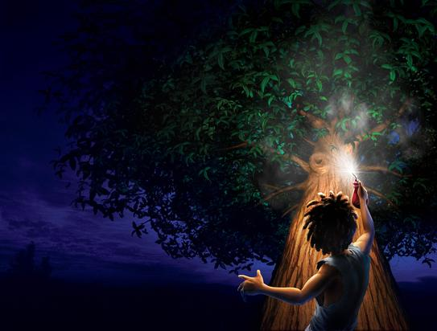

Bottle of Light

Chapter 1
Once upon a time, a boy named Zumu lived with his mother and father in a darkness that never ended. Fires crackled and burned but cast no light. Days were warm and nights were cool, but the sun never shone, and the stars never twinkled. People cooked their meals and mended their clothes by touch, because the dribs and drabs of light they had were too precious to waste.
Every day, Zumu’s mother and father took a few drops of light and went into the forest to gather as many plump, rubbery mushrooms as they could. “It rained last week,” one or the other would say. “I bet there’ll be some ripe ones under the old log by the stream.” They put their hands on the path-string tied to their front door. They followed it until it met another string, then followed that one to a third. Each time two strings joined, they felt around for the knots and beads tied to the strings that told them which way to go. They didn’t use their light until they were deep in the forest, and sometimes not even then.
Zumu’s earliest memories were of his father teaching him to stay on the path and hold onto the string. “If you ever let go, and you don’t have any light with you, what should you do?” his father asked.
“Stay where I am and yell for help,” Zumu said. He hesitated. “But—what if I’m so far from the village that no one can hear me?”
“Don’t be,” his father said simply. And for weeks afterward, Zumu had nightmares about wandering around lost until he starved or fell off a cliff.
Not everyone in Zumu’s village picked mushrooms. Some dug up rubies and polished them until they were as smooth as icicles. Others trapped crows in nets made of twigs and spider webs. Everyone worked as hard as they could, every day, just so that they could get some light from Mister Fing.
Mister Fing came to the village every week in a creaky old wagon pulled by four evil-tempered snarly-dogs with crooked fangs and foul breath. Tattered umbrellas stuck up from the sideboards on either side of the plank bench at the front of the wagon. In its back were six rusty steel drums full of light.
Mister Fing always parked his wagon in the middle of the village square. “All right,” he said each week as he kicked wooden blocks against its wheels to stop it from rolling away, “What do you have for me this time?” The schoolteacher, Mister Kalimu, lined the villagers up. One by one they gave Mister Fing their mushrooms, their rubies, and their struggling black birds. He tossed their gifts into an old canvas sack: thud, clunk, squawk. Then he pumped light from the rusty steel drums into their cans, jars, and bottles.
One by one the villagers bowed their heads and said, “Thank you, Mister Fing.” One by one, they poured a few drops of light into the schoolteacher’s pail, and a thimbleful more into the barrel that was kept in the village square for emergencies, then walked home with heavy hearts.
People struggled to make their light last from one visit to the next. They poured out a drop or two so they could cook, or fix a broken path-string, or put new strings on a fiddle. If a boy really liked a girl, he might splash a little bit of light on a flower every day to make it bloom, then put a few small drops on its petals and give it to her as a present.
But that only happened sometimes, because if people ran out of light before the week was over, and their neighbors had none to lend, they had to sit in the dark until Mister Fing’s next visit.
This was Zumu’s world. He didn’t think it was strange, because he had never known anything different. But from the time he was old enough to talk, he begged Granna Ipwepu to tell him how things had been when she was a little girl.
“Again?” Granna Ipwepu sighed. “Well, all right, but then straight to bed.” And she would begin the tale once again…
Years ago, Zumu’s people had lived in a beautiful town. Light fell out of the sky like rain, and there was color everywhere. But one night, a wicked dragon attacked. She drove the villagers into the forest, then somehow stole the light away.
“That was the last real night there ever was,” Granna Ipwepu said, “Because you can’t really have nights unless you have days to start and end them, and from then on there were no real days any more.”
Mister Fing had come to them in the darkness, when they were lost and frightened and wondering how they were going to survive. He gave them light to put up the first path-strings and plant their first crops of peppers and peas.
“Is the whole world like this now?” the villagers asked him. “Has all the light gone from everywhere?”
“I don’t know,” he replied, scowling. “I haven’t been everywhere. But whatever you do, don’t wander too far from the village. There are monsters out there with sharp fangs and quick claws. You’ll be safe if you stay here.”
A few people ignored his advice. “The whole world can’t be like this,” they said. “There must still be light ought there somewhere.” But those who set off to look for it never returned, so everyone else learned to say, “Thank you, Mister Fing,” at the end of every week.
Maybe it was listening to Granna Ipwepu’s story over and over again, or maybe Zumu had just been born with an imagination three sizes too big. Whatever the reason, Zumu grew up telling tall tales to anyone who would listen. “I heard the dragon!” he told his mother when he was four years old. “In the trees by Granna’s house!”
“Oh, Zumu,” his mother said. “That was just thunder.”
“Papa, Papa, I found some light! I found some light!” he said when he was seven, banging the door behind him.
“What?! Where?” his father asked. His chair creaked as he stood up.
“In the forest, near Granna’s house. It was blue!”
“Quick, show me,” his father said. He took Zumu’s hand.
Zumu held back. “Well, come on,” his father said. “Every bit helps.”
“I—I don’t know if I can find it again,” Zumu mumbled. “It was only there for a second or two.”
“Zumu…” his father growled.
“Shush, dear,” Zumu’s mother said. She put her hands on her son’s head, then on his shoulders, then knelt down in front of him. “Zumu, did you really see some light in the forest by Granna’s?” she asked gently.
“I think I did,” he said, ashamed. “Just a little bit.”
She hugged him. “Well, if it was just a little bit, it’s probably gone by now anyway, isn’t it?” she said. “So why don’t we just have our peas and peppers, and then go to bed?”
And then there was his tenth birthday. “Zumu, could you please stand up?” Mister Kalimu said. The village children were sitting in a semi-circle around the teacher so that they could share his meager light.
Zumu stood up straight. “Yes, sir?” he said.
“What day is it today, everyone?” the teacher asked.
“Zumu’s birthday!” the children said together.
The teacher nodded. “That’s right, it’s Zumu’s birthday. And what happens on birthdays?”
“Light! Light! Enough to walk home!” the children said, clapping.
“That’s right, whoever is having the birthday gets enough light to walk all the way home. Would you like your light today, Zumu?”
“Yes please!” he said.
“Really?” the teacher asked, stroking his chin. “Do you think you need it?”
The children fell silent. This wasn’t how birthdays were supposed to go.
“Sir?” Zumu asked.
“Do you think you really need that much light?” the teacher repeated. “I mean, anyone who can escape from a snarly-dog in the middle of the forest without any light at all hardly needs any from us.”
Zumu felt his face burning. He knew what the teacher was talking about. “No, sir,” he mumbled.
“Now, tell us, were you really chased by a snarly-dog?” the teacher asked.
“No, sir,” he repeated, hanging his head. Someone snickered. Behind him, Wumingu whispered, “Liar, liar, sat on fire.”
“No, I didn’t think so,” the teacher said severely. “In fact, I know you didn’t, because Mister Fing would never let his snarly-dogs chase anyone. Mister Fing takes very good care of us. He brings us our light, and without that… Well, can you imagine how horrible life would be? I certainly can.” The dread in his voice made the children shiver.
“Sorry, sir,” Zumu mumbled.
“Quite right. You may sit down.
Now, who has ten perfect M’s for me?” he asked. The children passed him their homework, so that he could check how neatly they had poked little dimples into the maple leaves they used to practice writing. After class, Zumu walked home in the dark as if it were just another day.
The seasons turned. Zumu turned eleven, then twelve. On a warm day when the forest smelled like spring his mother and father sat him down. “Zumu,” his mother said, smiling, “Your father and I have something to tell you. We’re going to have another baby!”
Zumu didn’t say anything. “Zumu?” his mother said. “Is everything all right?”
“Do I—do I get to choose?” he asked slowly.
“Choose what?” his mother asked.
“Do I get to choose whether it’s a brother or a sister?”
His mother and father laughed. “No, you don’t get to choose,” his mother said, hugging him. “Neither do we. But you can help us pick out names if you want.”
As spring turned into summer, then fall, Zumu’s mother grew big and round. One day Zumu’s father said, “Zumu, your mother’s time is close. I have to stay with her in case the baby comes, so you must take our mushrooms to the market tomorrow for Mister Fing. Do you think you can do that?”
“I think so,” he said.
“And do you promise to be careful?” his mother asked.
“I promise,” Zumu told her. He was twelve years old, and this was the most important thing he had ever been asked to do.
He lay in bed that night, listening to the wind run its fingers through the branches of the trees and thinking about tomorrow. Some children said that Mister Fing’s snarly-dogs chased the ghosts of lost children through the forest at night. Others said that he had taken his heart out and hidden it in a tree so that he would never grow old. Outside, the wind moaned softly. Zumu shivered and pulled his blanket tighter around himself.
Chapter 2
“Zumu… Zumu, it’s time to get up.” Somehow it was morning, and Zumu’s mother was gently shaking his shoulder. He got up, pulled his hair back into a ponytail, and put on his pants, shirt, and sandals.
Breakfast was peas and mashed peppers, just like always, but as his hands carefully explored the table, Zumu found a small glass of milk as well.
“Shouldn’t you be drinking this to help the baby grow?” Zumu asked his mother.
“I had some yesterday,” she told him. “This glass is for you, because it’s such a special day.” Zumu drank it slowly, then held the glass upside down and licked drops off the rim to make sure he got it all.
The door opened, and Zumu’s father came in. He had been sprinkling light onto the vegetables in the garden. A dim aura remained to light the first steps of Zumu’s journey.
“Are you ready to go?” he asked his son.
“I think so,” Zumu said.
Zumu’s father gave him an empty bottle as big as his head, a bag full of mushrooms, and a warm hug. His mother hugged him too. “Now remember, be careful, and keep your hand on the string,” she said. “Promise?”
“I promise,” Zumu said, hugging her back. He slung the bag of mushrooms over his shoulder and set off for the village, bottle in one hand, path-string in the other.
He walked quickly at first, savoring the last fading glow from the garden. Once that was gone, he slowed down so that he would not trip over roots or fallen branches. The mushrooms wouldn’t mind if they were dropped, but he didn’t want to show up in the village with skinned knees. And he certainly didn’t want to let the bottle fall—as thick as it was, it would surely shatter if it landed on a stone.
Zumu counted the knots in the path-string as he walked. A hundred fifty-one… A hundred fifty-two… Then a big knot that meant there was a hill ahead, and after that, more little knots to count.
The path-string led to a thick old pine tree. Zumu ran his hand over its gnarled bark, looking for other strings. Two square beads, and one round: nope, not that one. He groped a little further. Three round, one triangle: that was it. Off he went again.
Zumu reached the village square a few minutes later. People were already standing around a small bowl of light, swapping goods and gossip. “Tomatoes?” one woman said. “Oh, it’s been ages since I had a tomato—they take so much light.”
“I know, I know,” said the man beside her. “But they taste so good. I’d be happy to let you have one if you had some cheese.”
“I’m afraid I don’t,” the woman said, disappointed.
“I have some cheese,” someone else said to her. “I’d be happy to swap it for a spool of thread.”
“A whole spool?” the woman scoffed good-naturedly. “Why, I might have an arm’s length I could do without…”
Zumu joined the crowd but didn’t say anything. Some of the grown-ups looked at him curiously, but when they saw his bottle, they nodded and went back to their conversations.
A few people asked him how his mother was doing. “She’s fine, thank you,” Zumu replied politely. It was a small village; everyone knew that his mother’s time was close.
Bong, bong… Bong, bong… Zumu nearly jumped out of his skin, even though he’d heard the big bell ring every week since he’d been born. It hung from a tree overlooking the road that led to the village. Teenagers waited there for Mister Fing’s wagon. The first one to spot the drips of light that always seemed to leak out of the drums it carried rang the bell to let the village know.
Mister Kalimu raised his arms. “All right, everyone, line up,” he said in the same important voice he used when talking to children at school. He was a tall man, with broad shoulders and a square beard. His father had been the schoolteacher before him, and it just seemed natural that he was the one to line everyone up or calculate how much light everyone owed the school and the village’s emergency supply.
The villagers quickly formed a neat line. A few people kept talking quietly, but most fell silent. Zumu carefully set his bottle on the ground. Mister Fing wasn’t even in the village yet, but Zumu’s heart was already racing.
Then he heard them, panting and growling in the distance. The snarly-dogs! Someone gasped. Goosebumps broke out on Zumu’s arms.
Mister Fing’s wagon rolled into town a few moments later, rattling and squeaking behind the four dogs harnessed to it. Each time it hit a bump, flashes of light spilled from the steel drums it carried. A few drops stuck to the umbrellas over Mister Fing’s head, fading slowly. The sight was as breathtaking as the year-end fireworks but frightening instead of beautiful.
The snarly-dogs brought the wagon around in a big circle, so that when it stopped, it was pointed back the way it had come, then threw themselves panting onto the hard-packed earth. Mister Fing stepped down from his seat. “Oomph,” he grumbled. “All right, let’s see what you’ve got for me this time.”
Mister Fing was as wide as Zumu was tall, and as bald as an egg. He wore a long-sleeved black shirt under baggy blue overalls, black lace-up boots that reached halfway to his knees, and a black bowler hat pushed down almost to his eyes. In his hands he held a thick black walking stick with a handle carved in the shape of a crow’s head.
The schoolteacher stood at the head of the line and waved people forward one by one. Mister Fing took what each person offered, squinted at it, and threw it into his sack with a thud, a clunk, or a clang. Light glowed for a few seconds as he filled their jug or bottle. Each time the glow came, parents looked at their children, and teenagers who thought they were in love looked at each other. No one tried to bargain with him. They just said, “Thank you, Mister Fing,” one after another, as they always did.
Each time the line moved forward, Zumu picked up his bottle, took two steps, then set it down again on the hard ground. He was doing this for the dozenth time when somebody shoved into line in front of him.
“Hey!” said Zumu.
“Hey what?” sneered the boy who had just arrived. It was Wumingu. He was the same age as Zumu, but almost a head taller. He and Zumu had played together when they were little, and Zumu still had a wooden whistle that Wumingu had given him for his sixth birthday.
But ever since Wumingu’s father had disappeared in the forest, Wumingu had turned mean. He had been drinking one night and started complaining. It wasn’t fair that people had to work so hard for so little light, was it? “We should just take it,” he blustered. “Th’ next time he’s here, we should jus’ take it. ‘S only one of him, an’… an’… dozens of us.”
People tried to calm him down, but that only made him angrier. “You’re jus’… jus’… You’re chickens, that’s what you are! There has t’ be more light out there somewhere, an’ I’m gonna find it!” With that, he stumbled into the forest.
No one realized he was lost until the next day, when Wumingu’s mother, frantic with fear, began knocking on doors to ask if anyone had seen or heard him. Everyone turned out for the search. They walked along the path-strings, calling his name, or stood still and listened as hard as they could, hoping to hear him breathe. But he was never found.
His father’s disappearance wasn’t what made Wumingu mean, though. What made that happen was the stories the children told. The quickest way to earn a black eye in the schoolyard was to say out loud that Wumingu’s father had been eaten by Mister Fing’s snarly-dogs, or by Mister Fing himself. And if you said that he had been right, that there were still places where the light hadn’t gone away, and that he had found one of them and decided to stay there instead of coming back to his family, you’d be black and blue by the time Wumingu was finished…
Zumu knew all about those stories, because he had started some of them himself. “What if it was the dragon?” he had whispered to a hushed group of children one day. “What if she was out there, just waiting for someone to go too far from the village, and gulp!” That one had earned him a bloody nose, and three days of mending path-strings and clearing branches from paths when the teacher found out why. Wumingu hadn’t been his friend since.
All of this flashed through Zumu’s mind in an instant, but all he said to Wumingu was, “You’re not allowed to shove in like that. Go take your place in line.”
“What do you know?” Wumingu sneered. “You’re just a fungus boy.”
“A what?” Zumu asked.
“A fungus boy,” Wumingu repeated. “All you have is mushrooms. Everybody knows Mister Fing wants crows more than anything. He always gives the best light to people who bring him crows.” He held up a pair of struggling birds, their wings tied tight around their bodies, their feet caught in loops of rough twine.
Just as Wumingu said ‘crows’, Zumu’s eyes got big and round. “Wumingu—” he whispered.
“That’s Mister Wumingu to you, fungus boy,” Wumingu replied, crossing his arms and scowling.
Behind Wumingu a deep voice said, “Mister Wumingu, is it? My, my… I knew Kalimu called himself ‘mister’, but I didn’t know there were any others around here.”
Wumingu’s mouth fell open, then closed with a gulp. Slowly, very slowly, he uncrossed his arms and turned around.
Mister Fing was standing right there!
Chapter 3
Mister Fing tapped the head of his cane slowly in the palm of his hand as he glared at Wumingu. “Well?” he asked.
“I’m sorry, Mister Fing,” Wumingu mumbled. “I was only—“
“You were only,” Mister Finger sneered. The head of the cane went smack, smack, smack against his hand. “Mister indeed! Do you know what I have to do to bring a little light to this measly dirt-scratch village every week? Do you?”
Mister Kalimu stepped forward quickly. “Oh, he knows, Mister Fing. We all know, and we’re all very grateful that you—“
One of the snarly-dogs growled deep in its throat. The schoolteacher stepped back, his false smile drooping like a wet sock. Everyone else looked at the ground, embarrassed, afraid, or both.
Mister Fing poked Wumingu in the chest with a stubby finger. “There are fangsters out there, boy,” he growled. “Fangsters and banshees and a dragon.” He paused for effect. “You do all remember the dragon, don’t you?” he demanded.
“Yes, Mister Fing,” everyone mumbled.
Mister Fing snapped his fingers. “Here. Show me these crows you’re so proud of.” Wumingu handed him the two birds he had caught. Mister Fing held them up in front of his face, sneering as they struggled to peck his nose.
“Well,” Mister Fing said, “They aren’t much to look at, are they? Are they, mister?”
“No, Mister Fing,” Wumingu mumbled again. Zumu could hear how close he was to crying.
“No, they’re not. Tell me: how much light do you think they’re worth?”
“I don’t know, Mister Fing.” Wumingu’s voice was barely a whisper.
“Do you think they’re worth any light at all?”
Zumu’s stomach went cold. Somebody in line behind him whispered, “Oh, no…”
Mister Fing tossed the crows into his sack. “Here, give me that.” he said, snapping his fingers again.
Trembling, Wumingu handed over his empty can. Mister Fing set it on the backboard of his wagon, unscrewed its lid with a flourish, then picked up his hose. He pressed the button on the nozzle very gently with his thumb. A single drop of light, no bigger than a tear, fell into the can with a sad and hollow plonk.
Zumu’s stomach went cold. One drop of light! That wouldn’t last more than a few heartbeats! It would never get Wumingu and his mother through a whole week! And what would happen to their vegetable garden?
“There,” Mister Fing said. He screwed the lid back onto the can and held it out for Wumingu to take.
“Th-thank you, Mister Fing.” Wumingu was so quiet that Zumu could barely hear him. He turned around and pushed past Zumu, hugging the metal can to his chest. No one said a word.
“I’m very sorry about that, Mister Fing,” the schoolteacher said. “We’re all sorry, I’m sure, and I promise that—“
Mister Fing cut him off with a glance, then turned his cold eyes on the crowd. “All right, who’s next? I haven’t got all day.”
Zumu stepped forward and handed over his bag full of mushrooms. Mister Fing dumped them into his sack without even counting them, then filled Zumu’s bottle with light.
“Thank you, Mister Fing,” Zumu said dutifully, but Mister Fing had already turned to the person behind him.
The pride Zumu felt when he set out that morning had evaporated. He had daydreamed sometimes about getting back at Wumingu for his bullying, but not like this. Nobody deserved this. This was as bad as—as—as breaking a path-string on purpose.
A path-string… Zumu stopped short, then whirled around and raced over to one of the trees on the edge of the village. Round, triangle, round… Two squares, round, triangle… That was it! Hand on the path-string, he hurried into the forest.
He rehearsed stories under his breath as he walked. “One of Mister Fing’s snarly-dogs got loose and came after me.” No, that wouldn’t work—his father would be sure to ask in the village if anyone else had been hurt. “The path-string was broken, so I—no, no, no.” He shook his head. That wouldn’t work either.
He was still trying to think of what to tell his parents when he heard someone crying. “Wumingu?” Zumu asked. “Is that you?”
Zumu heard the faint squelchy sound of someone wiping their eyes. “What do you want?” Wumingu snarled.
Zumu felt along the string until he found Wumingu’s hand. “Here,” Zumu said, holding out his bottle. “Take some of our light. I’ll tell my mother and father I spilled it.”
Wumingu might have stared at Zumu, or his jaw might have dropped in amazement. In the dark, Zumu could not tell. All he knew was that Wumingu said, “I don’t want your stupid light!” and knocked the bottle out of Zumu’s hands.
Crack! The bottle hit the ground and broke into a dozen pieces. The whole forest lit up as a week’s worth of light spilled into the air. Zumu and Wumingu cried out together. Some nearby bats squeaked and twittered furiously, then fell silent as the light disappeared into the sky.
“Wumingu—what have you done?” Zumu whispered.
Wumingu was speechless for a moment, as shocked as Zumu. Then he said, “Serves you right, fungus boy!” and ran away down the path.
Zumu stood there, his mind whirling. He could not believe what had just happened. All of his family’s light, gone—and with a new baby about to arrive!
He was still standing there when Granna Ipwepu came hobbling along the path carrying her week’s ration of light in a battered old teakettle with a cork in its spout.
She stopped a few knots away from Zumu. “Who’s there?” she asked sharply. Even when there was light, the old woman had a hard time seeing.
“It’s me, Granna,” Zumu said.
“Was that your light these old eyes of mine saw?”
Zumu nodded. “Yes, Granna.” It wasn’t until a single hot tear trickled down his cheek that he realized he was crying.
“Oh, there, there, child,” Granna Ipwepu clucked. She hobbled forward and put her bony arm around Zumu’s shoulders. “There, there, there.”
Zumu shrugged her arm away and stepped back. “I’m all right,” he lied. He wiped his nose with his sleeve angrily as he felt fresh tears well up.
“What happened?” Granna Ipwepu asked.
“I—I guess I tripped,” Zumu said miserably. He kicked one piece of the broken bottle off the path, then another.
Granna Ipwepu clucked her tongue. “Tsk tsk…” she scolded, “That’s what comes of going too fast. I’ve always said, the faster you go, the longer it takes you to get anywhere. And now look what’s happened! And with a new baby on the way too…”
“Yes, Granna.” Zumu’s voice caught in his throat.
Granna Ipwepu’s tone softened. “Oh, child, don’t cry. It’s not the end of the world. We’ve already had one of those, and we’re still here, aren’t we? Here, you just hold on a tick.” The path-string went twong as Granna Ipwepu let it go. Leaves rustled as she brushed her hand through the branches over their heads. There was a soft pock as she plucked an acorn, and an even softer ploop as she pulled off its cap.
“Now,” she muttered, patting her dress, “I know I had that thimble this morning. Ah, here it is!” She pulled the cork out of the spout of her kettle with her teeth and tilted it ever so gently. Three tiny drops of light went plip plip plip into the thimble. She covered it with her thumb while she put the cork back in the kettle, then screwed the acorn cap onto the thimble as a lid.
“Here,” she said, feeling along the string to find Zumu’s hand. “You give this to your parents. I know it isn’t much, but maybe if everyone gives you a little…”
“Th-thank you, Granna,” Zumu said. She patted his shoulder, then hobbled away, clucking and muttering under her breath. The path-string twitched in Zumu’s hand, fainter and fainter, before finally falling still.
Zumu stood alone in the dark. He wanted to cry. He wanted to make time go backward or wake up and find that this whole day had been a dream, that he was still lying in bed, and still had a chance to get everything right. Most of all, he wanted a full bottle of light to take home to his mother and father, not just three drops in a thimble. But the only place to get light was from Mister Fing’s wagon, and it was probably leaving the village at that very moment.
Mister Fing’s wagon… Wait! The drums in Mister Finger’s wagon might not be empty! Maybe Zumu could borrow some light until next week. He would pick extra mushrooms for a whole year—for the rest of his life, if he had to! Just so long as there was light when the new baby arrived.
Zumu raced back to the village. The path-string flew through his fingers so fast that it burned. Even so, he was too late. The village square was silent, empty, and dark. Mister Fing was gone.
Faintly, far away, Zumu heard the creak, creak of the wagon’s wheels as the snarly-dogs pulled it down the steep mountain road. “Nooo....” he moaned. He had only missed it by a minute. It wasn’t fair—it just wasn’t fair!
Zumu felt like he might start crying again. Instead, he took a deep breath and made the biggest decision of his life. He let go of the path-string and plunged into the forest.
Chapter 4
Branches slapped Zumu in the face, and roots grabbed at his feet. One false step, one nasty hole, could break his leg. A stone rolling out from under his feet could spill him over the edge of a cliff.
Zumu knew what he was doing was dangerous. If he got lost in the darkness, he might never find his way home. But he and his friends had pooled their light allowances one day and followed the road out of the village on a dare. It snaked back and forth as it went down the mountain. If he kept his wits about him, he might be able to catch the wagon at one of the bends. And besides, he still had Granna Ipwepu’s thimble in case anything went wrong.
Phwack! Zumu ran straight into a big pine tree! It knocked the wind right out of him, leaving sticky sap on his forehead and the palms of his hands. He stood there for a moment with his head spinning. Little sparkles danced in the darkness before his eyes.
As he shook his head to clear it, he saw light flash again. He blinked, thinking it was just another sparkle from hitting his head. Then looked off to one side. His father had taught him that it was easier to see faint things if you didn’t look straight at them.
His heart pounded as he waited. There! The light flashed again. It had to be from the drums in the back of Mister Fing’s wagon. He could still catch up! He felt his way around the tree and kept going.
The ground leveled off under his feet a few moments later. Zumu stumbled and fell to his knees, panting. The road smelled dry and dusty, instead of damp and crumbly like the forest. He patted the ground in front of him until he found the ruts made by the wagon’s wheels, then crept backward into the bushes.
Light flickered off to his right. Zumu heard the wagon’s wheels go squeak squeak, and the snarly-dogs huff and growl as they pulled it along. Zumu shrank deeper into the bushes. He wiped his hands on his shirt. He would only have one chance…
The wagon rolled around the corner. Mister Fing sat squarely in the middle of the plank bench at the front of the wagon, his bowler hat firmly in place. He had the snarly-dogs’ reins in one hand, and a whip in the other. The tattered umbrellas were open over his head. The only light was the drops that splashed into the air every time the wagon bumped over a rock or a pothole.
The wagon came closer. The snarly-dogs seemed to grow bigger by the second. Mister Fing cracked his whip again, so loudly that it made Zumu jump in his hiding place.
The wagon rolled past—it was now or never! Zumu scrambled onto the road, grabbed hold of the wagon’s tailgate with both hands, pulled himself up, and slipped into the back. He had done it! He was in Mister Fing’s wagon.
But now what?
Zumu suddenly realized that he had no idea what to do next. What if Mister Fing wouldn’t give him any light? How would he find his way home? What if—what if he fed Zumu to the snarly-dogs?
Dark misgivings chased each other around inside Zumu’s head as the wagon bumped down the mountain road. He was still trying to think of something when Mister Fing shouted, “Whoa! Whoa, you stupid creatures!” The wagon slowed, then stopped. The snarly-dogs fell to the ground, wheezing and drooling.
Zumu slithered forward past the steel drums and peeked through the wagon’s sideboards. Propped his walking stick against the seat, Mister Fing poured some light from a jar into a chipped teacup. He set the teacup down beside the cane and started pulling the things the villagers had given him out of his sack. The crows went on the seat beside him, still struggling to free their wings. The rubies went into his pockets. And the mushrooms—every single mushroom was tossed into the ditch! Zumu could hardly believe it. His father had spent days groping around the rotten logs for those mushrooms!
“There,” he finally muttered, turning his sack upside down and shaking it. “I think that’s everything.”
The carved crow’s head on his walking stick opened its beak and cawed, “I’ll never understand why you let them give you the rest of that junk. It’s no use to you—why give them any light for it?”
Zumu gasped—the crow’s head could talk! Then he clapped his hand over his mouth. Had Mister Fing heard him?
“Because there aren’t enough crows and rubies to keep them all busy,” Mister Fing grumbled. “And if I don’t keep them busy, they’ll start thinking about things. No good can come of that.”
“Well, you’re certainly an expert on the perils of too much thinking,” the crow’s head muttered.
Mister Fing picked up his cane and spoke directly to the carved crow’s head. “Now,” he said, “There’s not going to be any trouble this trip, is there?”
“Trouble?” the crow’s head squawked. “Why would there be trouble?”
“Hmph,” Mister Fing snorted. “One of these days I’m going to figure out how to open up their heads without your help. And when I do, I’ll toss you in the ditch with the rest of the garbage.”
“And one of these days, I’m going to fly again,” the crow’s head squawked back. “Care to wager which will come first?”
Mister Fing snorted again. He set the cane down, stood up, and pulled the cloth covers off the umbrellas at either end of his bench.
Zumu’s eyes couldn’t have gone any wider. The umbrellas’ spokes were not made out of willow twigs like the ones the villagers made. Instead, each spoke was a sharpened sword blade. Even in the faint light from Mister Fing’s teacup, their edges gleamed razor-sharp.
Mister Fing put his hand on one and gave it a spin. The blades went whup, whup, whup over his head. He nodded and jumped down from the wagon once again. Zumu heard him crawl underneath it. Something clanked and scraped metallically.
A few moments later, Mister Fing climbed back into his seat. “That ought to get us home,” he muttered, wiping his hands clean on the front of his overalls. He picked up the reins and snapped them.
“Haw!” Mister Fing shouted. “Haw, you ugly brutes, get a move on!” The snarly-dogs leapt to their feet and pulled against their harnesses. The wagon began to roll, slowly at first, then faster and faster as the snarly-dogs hit their stride until it was practically flying down the hill.
As the wagon picked up speed, the umbrellas began to spin around. The rattling and clanking underneath the wagon grew louder. Zumu realized that Mister Fing must have hooked a chain up to the wagon’s axles. The turning wheels were driving the umbrellas.
Faster and faster they whirled, until their blades were just a blur. “Haw!” Mister Fing shouted, whipping the dogs. “Faster! Faster!” Light from the drums splashed onto the umbrellas as they raced along. The spinning blades threw it into the forest around them, leaving glowing spatters on the trees.
The road leveled off just as the forest ended. Zumu got to his knees and peered over the wagon’s sideboards. They were in the bottom of a narrow valley. The road wasn’t hard-packed dirt any longer. Instead, it was covered in something hard and smooth, with a dashed yellow line running down its middle.
The wagon’s wheels made a drumming sound as they rolled over a stone bridge. Zumu caught a single glimpse of a stream beneath it, but just at that moment, a thousand wings flapped in the air over his head.
Chapter 5
Zumu looked up. Hundreds of black crows had appeared out of nowhere. They circled above the wagon like dark leaves caught in a tornado, then swooped down to attack, cawing furiously.
The whirling umbrella sword blades held most of them off. The few that managed to get past threw themselves on Mister Fing. They pecked at his hat with their sharp little beaks and scratched his face with their sharp little claws.
Mister Fing took the reins in his teeth, pushed his walking stick under his leg, and swatted at the birds.
Finally he couldn’t take it any more. Spitting out the reins, he grabbed the walking stick and held it up so that its carved handle was just inches below the whirling blades. “Call them off!” he shouted. “Call them off, or I’ll slice you to flinders!”
The carved crow’s head squawked at the flock. They instantly flung themselves back into the sky, cawing with disappointment. Their flapping wings sounded like an enormous blanket being shaken out as they disappeared into the darkness.
Just as they did so, the wagon plunged into the forest on the other side of the little valley. Mister Fing picked up the reins again. “Whoa!” he shouted. The wagon slowed and stopped. The snarly-dogs fell to the ground, gasping for air.
Light from the steel drums had splashed onto the wagon’s sides during its pell-mell ride, so much that Zumu could see the needles on the branches over his head. Mister Fing pulled a dirty cloth out of his pocket and wiped his forehead. Without warning, he whacked the head of the cane against his seat. “That… was… stupid,” he said angrily, rapping the head of the cane again in time with each word.
“Ow!” the crow’s head cawed. “Stop! I command you, stop!”
“I don’t… take… orders… from… you… any… more, remember?” Mister Fing said grimly. Crack, crack, crack went the crow’s head, over and over again. “And if you ever try a stunt like that again, I promise, I’ll dunk you in a bucket full of the brightest light I have and let you sizzle. All right?”
“They’ll get me you one day,” the crow’s head squawked.
“Maybe,” Mister Fing said. He rapped the crow’s head against the bench one more time for good measure. “But not today.” He put the cloth back in his pocket, then snapped the reins. “Haw!” he shouted. The wagon rolled forward once again.
The road snaked back and forth, rising steadily. The air grew colder, and the trees became smaller. Zumu hugged himself and shivered in the back of the wagon. I should have brought a sweater, he thought, but that just made him think of all the other things he should and shouldn’t have done that day, and that just made him miserable.
He wondered what his mother and father were doing. They would know he was missing—he should have been home hours ago. They were probably out looking for him, along with the rest of the village. He wondered whether Wumingu would tell anyone what had happened, or if anyone would think to ask Granna Ipwepu if she had seen him. Zumu felt as sorry for himself as he had walking home in the dark on his tenth birthday.
Just then something happened that Zumu would remember for the rest of his life. A metal pole stood beside the road ahead of the wagon. It was tall and slender like an overgrown sapling, but it had only one branch, which stuck straight out from its side.
A single piece of glass hung from that branch like some strange fruit. As the wagon came closer, the glass started to flicker: red, orange, red, orange, yellow, orange, yellow. The yellow light steadied, then grew brighter and brighter, until it was the brightest thing Zumu had ever seen.
He stared up at the light as the wagon rolled beneath it. Dazzle-spots danced in front of his eyes. It was so bright that it cast shadows. Why, it was so bright that he could see what color the leaves were!
Another metal pole stood by the road ahead of them. As the wagon rolled under the first one, the piece of glass on the second one flickered into life as well. Zumu almost forgot to breathe. The light poured over him like warm water. He could see the dirt under his fingernails, and the flakes of rust on the steel drums around him. He felt like he could see everything. Had Wumingu’s father been right? Was the rest of the world still full of light after all?
But then he looked back. As the wagon rolled past the second light, the first one started to dim: yellow, orange, red…black. As quietly as it had come on, it went out again, plunging its stretch of road back into darkness. Zumu shivered. The warmth and wonder he felt disappeared along with the light. The air around him suddenly seemed cold again.
The wagon rolled on. The strange lights came to life and died away, over and over again. Each one made Zumu feel even further from home. Would a week without light really have been that bad? He wondered. After all, other families got through it. And the baby-to-be might have come late anyway…
He was so sunk in misery that he almost didn’t notice the first house they passed. Its roof sagged over its porch, and weeds had grown up between its front steps, but there were still shutters on its windows.
They passed another house a few minutes later, then another, and another, until house after house stood shoulder to shoulder on either side of the road. This must be the town, Zumu thought excitedly. The town in Granna Ipwepu’s story!
Suddenly, a loud, cheerful voice said, “Hello, Mister Fing!” Zumu nearly jumped out of his skin. He peeked through the wagon’s sideboards.
Two people stood waving on the sidewalk directly underneath one of the strange lights. They were as bald as Mister Fing, and wore overalls like his, but had big, friendly smiles. Zumu hunched down, afraid they might see him. As the wagon passed them, though, they picked up their rakes and turned back to the pile of leaves behind them.
More people waved at the wagon as it rolled through town. “Hello, Mister Fing!” they all said. None of them were young, but none of them seemed old, either. There were no short ones, tall ones, fat ones, or skinny ones. Instead, they were all about the same size, as bald as eggs, and wearing identical overalls. What was worse, they all smiled and waved in exactly the same way. Zumu grew more uneasy with each friendly “hello.” Something was definitely not right…
Without warning, Mister Fing jerked on the reins and shouted, “Whoa!” The wagon stopped. Zumu felt a lurch as Mister Fing climbed down from his seat.
“What happened here?” Mister Fing asked angrily. “Who made this mess?” Zumu slowly raised his head so that he could see what the fuss was about.
A bald woman stood beside a tidy little house. She had a paintbrush in one hand, and a can of paint in the other. A wooden ladder lay on the sidewalk beside her. A man’s body was tangled up with it. He still had his paintbrush in his hand, but his can of paint had spilled bright blue all over the sidewalk. His eyes were open, and he was smiling, but he was not moving.
“We were putting a fresh coat of trim on the house,” the woman said cheerfully. “He was saying how beautiful it was. Then he fell down.”
“Beautiful, eh?” said Mister Fing sourly. “Which one is he?”
“Number 20717,” the woman said.
“Oh, not him again. His brain seems to wear out every time I turn around. Put him in the back of the wagon. I’ll see what I can do.”
The woman put her paintbrush and can on the sidewalk. She moved the ladder out of the way with one hand, then grabbed the man’s overalls and lifted him up as if he weighed no more than a pair of socks.
Zumu looked around wildly. There was nowhere to hide! He was too big to fit behind one of the steel drums, and they would make too much noise if he tried to push two of them together. He was going to be caught!
Zumu heard the bald woman walk around to the back of the wagon. His heart raced. The catch on the backboard went snick! He tried to swallow, but his mouth was too dry. The backboard swung down.
Zumu looked straight into the bald woman’s eyes!
Chapter 6
Zumu was frozen with fright, but the woman didn’t blink. She heaved the man’s body into the wagon. Clunk went his head. He lay there like a log, the smile still on his face.
The woman closed the backboard. “All set!” she said cheerfully.
Mister Fing didn’t look back. “Haw!” he shouted. The snarly-dogs barked and strained at their harnesses. The wagon rolled forward once again.
Zumu sat with his knees under his chin, trying to stay as far away from the man’s body as he could. His head was whirling. Why were Mister Fing and the woman treating him as if he were no more important than a mushroom? And the woman—why hadn’t she said anything? She must have seen him.
Despite all the thoughts chasing each other around his brain, Zumu’s eyelids began to droop as the wagon bumped along. He was tired, and hungry, and cold, and a long, long way from home. “Serves you right,” he whispered to himself. That’s what he should have said to Wumingu, instead of trying to fix things. It wasn’t his fault Wumingu had called himself “mister”. It wasn’t his fault Mister Fing had only given Wumingu one little drop of light.
Zumu shook his head. Telling himself stories about what he could have said or should have done wasn’t going to get him out of this. Still, he wished he could just run home and tell his mother and father what he’d seen and let them figure out what to do about it. He sighed. They would be worried sick about him. He wanted nothing more than to be back home eating his peas and peppers or lying in bed under a pile of blankets. An enormous pile of warm, scratchy blankets…
The sound of loose stones crunching beneath the wagon’s wheels woke Zumu up. For a moment, the splashes of light from the drums around him made him think that he was still dreaming. Then he saw that he had stretched out his legs while he was asleep. His foot was right in the dead man’s ear! He jerked his knees back up against his chest, then turned over and peeked through the wagon’s sideboards.
From the way the wind was whistling, Zumu guessed they had reached the top of the mountain. A dozen poles with glowing glass bulbs like the ones in town lit the scene. And what a scene it was!
Instead of hard-packed earth, the wagon was rolling across a big circle of gravel.
An enormous round building with a domed roof stood in front of them. Something that looked like a thick metal log stuck up from it, pointing at the sky like a raised arm. Next to the building were a dozen round tanks, each three stories tall. A tangle of pipes connected them to each other and to the building. A few spare lengths of pipe lay scattered on the ground. It was the biggest area Zumu had ever been able to see at one time in his whole life. For a moment, the sheer space of it made him dizzy.
Then Zumu saw thin streamers of light spraying out of tiny cracks in the pipes and tanks. Thick bunches of weeds grew wherever the light splashed. He would have said that nothing could ever surprise him again after everything he had already seen that day, but when he realized that the tanks were full of light, his jaw dropped. There was more light in them than he thought there could be in the whole world!
The snarly-dogs pulled the wagon toward a clear spot between the building and the storage tanks. “Lazy smelly stupid ugly creatures,” Mister Fing grumbled as he cracked his whip over their backs. Yipping and growling, they turned the wagon to face downhill.
Its axles creaked as Mister Fing stepped down to the ground. Zumu held his breath, listening as carefully as he could. The moment he heard the clink chink clank of the snarly-dogs’ harnesses being undone, he scuttled to the rear of the wagon and slipped over the backboard. The rough wood scraped against his belly as he lowered himself to the ground. He took one gentle step, then another, wincing as the gravel crunched softly under his weight.
Three steps, four, five… He was on bare rock. As quick as a bat, he ran a half-dozen steps to the nearest tangle of pipes, taking care not to kick any of the spare pieces lying on the ground, and crouched down to hide.
Just as he did so, Mister Fing straightened up and tossed the snarly-dogs’ harnesses into the back of the wagon. “There you go, you stupid creatures.” The snarly-dogs snapped at each other half-heartedly before curling up with their snouts under their tails.
Mister Fing took some wooden blocks that were lying on the ground and wedged them under the wagon’s wheels. That must be to stop it from rolling back down the mountain, Zumu thought. He noticed that Mister Fing kept his walking stick tucked under his arm while he worked. He glanced up, but there was no sign of the flock of crows that had attacked them earlier.
Once the blocks were in place, Mister Fing unlatched the wagon’s backboard and glared at the drums of light. “I’ll empty you in the morning,” he muttered. “Now, let’s see what’s gone wrong with you this time…”
Mister Fing grabbed the leg of the man’s overalls, dragged his body to the edge of the wagon, and slung it over his shoulder like a sack full of moss. Picking up Wumingu’s crows with his other hand, he trudged over to a door in the side of the round building and pulled it open. Hard white light spilled out.
The fallen man’s head thumped against the side of the building as Mister Fing stepped inside. The door closed behind him with an ominous click.
Zumu crouched behind the tangle of pipes, his heart racing. Any thoughts he’d had about asking Mister Fing to lend him some light were long gone.
He was still cold and hungry, but he was angry now, too. There was enough light in the tanks around him to light every home in the village for a thousand years. Why, there was more spilling out of the pipes and going to waste than everyone Zumu knew used in a month, but Mister Fing only gave them each a cup or two at a time! And he had thrown away the mushrooms his parents had worked so hard to collect as if they were worthless!
For a moment, Zumu thought about hitching the snarly-dogs to one of the tanks and dragging it all the way back the village. But no, they were far too big. Maybe he could fill the drums in the back of the wagon and take them home instead. He’d give some to his mother, for the new baby, and some to Granna Ipwepu for her flower garden, and even some to Wumingu, just to prove that he wasn’t a bully.
Then Zumu shook his head. The snarly-dogs’ teeth were as long as Zumu’s feet. He couldn’t just hitch them to the wagon as if they were somebody’s pet moles. And Zumu was pretty sure Mister Fing wouldn’t be pleased if someone made off with his wagon. No, the most sensible thing would be to find a bottle, fill it with light, and try to walk home without getting caught.
But then Zumu thought again about the baby-to-be. He thought about the long days his father spent on his knees in the forest gathering mushrooms, and about Wumingu’s missing father. And then he said to himself, Well, I’ve come this far…
The snarly-dogs were already snoring, but Zumu waited a few more minutes before stepping over the pipe and tiptoeing over to the building. One of the snarly-dogs snuffled in its sleep as he went by. He froze. It licked its chops, then started to snore again. Zumu swallowed the knot in his throat and kept going, his eyes fixed on the light puddled under the door Mister Fing had gone through.
Zumu turned the door handle slowly. The latch clicked. He glanced over his shoulder at the snarly-dogs: yes, they were still asleep.
Gingerly, he opened the door and slipped inside.
A little glass bulb like the ones he’d seen in town hung from the ceiling, giving off the hard white light Zumu had seen earlier. As he let out his breath, the door closed behind him with a soft click.
Chapter 7
Zumu found himself standing in a short hallway. He tiptoed to the door at the far end and sounded out the words on the dusty brass sign attached to it: “Main Telescope”. Holding his breath, he opened the door and stepped through.
“Oh…” he breathed. The inside of the building was one enormous room. Small white lights hung from the curved ceiling. A narrow metal walkway ran around the wall, and another cut across to the other side.
The metal log seemed to float in the middle of the room. It took Zumu a moment to realize that it was actually held between the arms of an enormous metal “U”. One end stuck out through a rectangular slot in the roof. The other grew skinnier as it got closer to the floor, like an upside-down tree.
That must be the “telescope,” Zumu thought. I wonder what it’s for?
He peered over the walkway railing. A thick hose was bolted onto the end of the telescope below. It led to a pump as big as Mister Fing’s wagon and as ugly as a snarly-dog.
A metal pipe came out of the pump’s back. It snaked across the floor to a hole in the wall.
But that’s not what Zumu saw first. What he saw first was Mister Fing standing at a workbench next to the pump. The top of the workbench was completely covered with nuts and bolts, saws, hammers, and pieces of wood that had been carved to look like feet and ears. The crow-headed cane lay carelessly on top of one of the piles of junk, the two tied-up crows beside it still wriggling.
Zumu’s eyes widened. Two—no, three—people stood motionless beside the workbench. The first had no head! The second was missing both arms! And the third—the third was the man from the back of the wagon! His eyes were open, and he was smiling, but he didn’t seem to be moving a muscle. What was going on here?
Mister Fing didn’t pay any attention to the strange figures. Instead, he picked up a metal bottle with a pointed nozzle and a trigger handle that stood on the workbench. When he squeezed the handle, a thin spray of light sputtered out and fizzled into nothing.
Mister Fing muttered in disgust. Zumu was glad he couldn’t hear the words—he was pretty sure they were ones he wasn’t supposed to know. Still muttering, Mister Fing went to a tap sticking out of the wall. He took the top off the bottle, held it under the tap, and turned the handle.
A stream of pure white light gurgled into the bottle. When it was full, Mister Fing turned off the tap and screwed the bottle’s top back on. When he squeezed the handle this time, light shot halfway across the room. “Hmph,” he snorted, sounding no happier than before.
The two crows Wumingu had caught struggled frantically against the string knotted around their wings as Mister Fing picked them up. Zumu could hear the fear in their cars, and the anger in the answering caws from the crow’s head cane. Ignoring the noise, Mister Fing aimed the bottle’s nozzle at them and sprayed them with light.
The crows’ caws turned into one long aawwwwwwwkkkkk, then fell silent. Something that looked like gray smoke rose from them. Zumu felt sick. Did Mister Fing eat crows?
But no—the light wasn’t burning them. When Mister Fing finally stopped spraying them, they looked no different, although their struggles were weaker. Setting the bottle down, Mister Fing undid the loops of string that held them prisoner and tossed them into the air. They fluttered around his head for a moment, ignoring the plaintive caws from the crow’s head cane below, then flew up the length of the telescope and out into the dark sky.
“There,” Mister Fing said, satisfied. “That’s two less to worry about.” The crow’s head cane didn’t answer.
With that job done—whatever it was—Mister Fing took the rubies the villagers had collected out of his pockets and toss them into a battered old metal bucket. Once his pockets were empty, he picked out one thumb-sized ruby that glistened more brightly than the rest. He held it up level with his eyes and measured it carefully with a metal ruler. “Hmph.” He clipped the ruby into a small glass vise.
“Now, where’s that lens?”
He poked through the odds and ends piled on his workbench. After a moment, the crow’s head said, “You know, you’re getting to be as messy as a mammal.”
Without looking up, Mister Fing reached over, picked up the walking stick, and rapped its handle hard against the edge of the workbench. “You watch your beak,” he warned. “Or I’ll dunk you in the light next time. You know how much you’d like that, don’t you?” He tossed it back onto the workbench contemptuously and continued poking at the mess in front of him.
A moment later he grunted, “There you are.” He picked up a curved piece of glass. Holding it a few inches away from the ruby, he pointed the bottle’s nozzle at it and squeezed the trigger.
The curved lens squeezed the light that fell on it into a dazzling white thread. It sizzled when it hit the ruby. Shadows danced around the room as Mister Fing shaved a sliver off the bright red stone. Even after Mister Fing stopped pumping, Zumu saw a bright after-image in front of his eyes.
Mister Fing set the bottle down on the floor and took the ruby from the vise. He juggled it from hand to hand, blowing on it, before setting it back down on the workbench.
As he waited for it to cool, he took off his hat to reveal a large bandage plastered to his forehead. Picking up a mirror, he studied the bandage carefully, patting it with his hand to make sure it was secure. Then he picked up his cane, holding it up so that the crow’s head was looking straight into the eyes of the man who had fallen.
“Come on, do your little trick,” Mister Fing growled, one hand still on his bandage.
“Say ‘please’,” the crow’s head cawed. Mister Fing rapped it on the edge of the table and held it up again, his hand still on his bandage.
The crow’s head opened its beak and cawed a shrill little tune, kar koo kaw. With a quiet click, a hatch the size of Zumu’s palm popped open in the man’s forehead.
Zumu watched, queasy and fascinated at the same time, as Mister Fing put the cane down, put his hat back on, and picked up a pair of pliers. Muttering to himself, he pried a small piece of stone out of the man’s head. It was the same size and shape as the ruby Mister Fing had just cut, but as dull as an old brick.
“Well, that one didn’t last long.” Mister Fing tossed it over his shoulder, then took the carved ruby from the workbench and inserted it carefully into the now-empty slot.
Nothing happened. Mister Fing drummed his fingers on the workbench impatiently, then slapped the man’s cheek, whack whack. “Come on, you stupid robot. Wake up, wake up.”
The man twitched. He blinked his eyes. “Why, hello, Mister Fing!” he said brightly. “Am I in your workshop again? It is wonderful to be back! Why, I—“
Mister Fing hastily plucked the ruby out of the man’s head. The man’s babbling instantly stopped.
Mister Fing weighed the little gem in his hand. “Hmph,” he grunted. “Sounds like that one would make you too smart for my own good. And we can’t have that, can we?”
“You never know—you might even need it yourself one day,” the crow’s head squawked.
“Shut your beak,” Mister Fing said sharply. He set the ruby down and took another one out of the bucket. This one didn’t shine nearly as brightly as the first had. He inserted it into the man’s head and rapped his knuckles on the man’s nose as if he was knocking on a door.
The man blinked once again. “H-h-hello M-m-mister F-f-f-” he stuttered.
Mister Fing thumped the man’s chest. “-ing!” he finished. “Robot number t-t-two oh seven one seven, reporting f-f-for work.”
“So what happened to you this time?” Mister Fing demanded.
“I was p-p-painting!” the robot said with an innocent smile. “I l-l-love to p-p-p— I love to p-p-p— I love to p-p-p—!”
Mister Fing growled. He yanked the second ruby out of the robot’s head and tossed it back into the bucket.
“It’s almost sunrise,” the crow’s head said.
Mister Fing glanced at a clock on the wall. “So it is.” He turned to the pump on the floor and pulled on a lever. With a choke and a cough, the pump wheezed into life, ta-pock ta-pock ta-pock.
“When did you last check the telescope’s alignment?” the crow’s head asked.
“Don’t tell me how to do my job,” Mister Fing grumbled, but he walked around the pump and began fiddling with the telescope’s controls anyway.
The clock on the wall went tick, tock, tick, tock, bong! A moment later the pump’s ta-pock ta-pock deepened to a tha-bunk tha-bunk. The pipe on the floor went clonk, and a spray of light no thicker than a hair spurted out of a tiny crack in a joint.
Zumu clapped a hand over his mouth to stop himself from shouting. This was where the light came from! The telescope, or the pump, or something was sucking it out of the sky!
Outside, Zumu heard a growl, then barking. “Are they at each other again?” Mister Fing grumbled. He went to a door on the other side of the room and left, banging it behind him.
Zumu heaved a sigh of relief. His head felt like it was really spinning now. It was bad enough that Mister Fing was hoarding all that light, and throwing away the mushrooms that the villagers gave him, and doing whatever it was he did to the crows and the people from the town. No, not people—what was the word he had used? Robots! Robot with rubies for brains, and who knew what else? But the light—Zumu knew where Mister Fing got his light! He had to get back to the village and tell everyone!
But would they believe him? He only half believed it himself. He needed some kind of proof.
The rubies! He could take some of the rubies! That would convince everyone. And the bottle of light with the squeeze handle, too, so that he could find his way home.
A rickety metal ladder ran from the walkway to the floor below. Afraid that Mister Fing might come back at any moment, Zumu scrambled down it to the floor below and raced over to the workbench.
Just as he reached out to pick up the freshly-carved ruby that lay there, a rasping voice said, “What are you doing, you stupid mammal? He’ll see right away that it’s missing!”
Chapter 8
Zumu jumped. He had forgotten that Mister Fing’s walking stick was lying on the bench!
“I—I—” Zumu stammered.
“Wonderful,” the crow’s head cawed sarcastically. “Someone finally comes to rescue me, and all he can think about is pretty little gew-gaws. You’re worse than my crows!”
“I’m sorry,” Zumu apologized. “I just need something to show to everyone back in the village, or they’ll never believe I was here.”
The crow’s head glared at him. “What difference will it make if they believe you? He’ll still be here with all the light, and they’ll still be there in the dark.”
Zumu hesitated. Then his jaw set. “Somebody will think of something,” he said. He laid a rag from the workbench on the floor, then knelt beside the pail and scooped a double handful of rubies onto it.
The crow’s head snorted. “So, was that you in the back of the wagon?” it asked.
Zumu paused. “You knew I was there?”
“Of course! Fing might be too chalk-headed to notice, but my crows spotted you when we were on the bridge. You were supposed to rescue me while they distracted him.”
“I’m sorry,” Zumu said again. “I didn’t know you needed rescuing.”
“Of course I need rescuing!” the crow’s head squawked indignantly. “Do you think I like being knocked around whenever Fing feels grumpy?”
“I suppose not,” Zumu said, tying the rag’s corners together to make a bag.
“There’s no supposing about it,” the crow’s head snapped as Zumu straightened up. “Now, can you see in the dark? No? Oh, mammals… You’re useless. Look—over there, on your left. Take the spray bottle. He’ll probably spend a week looking for it.”
Zumu turned to pick up the bottle of light and jumped a second time. He was face-to-face with the robot from the wagon. It looked like a person, except for having no hair, but when he waved his hand in front of its face, it didn’t respond. Zumu suddenly felt sorry for it.
“What are you doing?!” the crow’s head squawked as Zumu put the bottle of light and the bag of rubies on the workbench. “Fing could be back any second!”
Zumu ignored the harsh voice. He picked up the brilliant ruby that Mister Fing had put in the robot’s head and then taken out. Standing on the very tips of his toes, he set it into the slot in the robot’s forehead and closed the hatch.
Click. The robot blinked. “Good morning, Mister—hey, you’re not Mister Fing!” it said.
“No, I’m not,” Zumu said. “I’m… I’m… I’m his assistant!”
The robot’s smile widened. “I’m very pleased to meet you, Mister His Assistant! I’m Number 20717, at your service!”
Zumu grinned. “I’m very pleased to meet you too, Number 20717. And I’m not a mister—my name is Zumu. Are you feeling better now?”
“Oh yes, I feel like my brain is practically sizzling! It must be brand new!”
“Yes, and very shiny,” Zumu told it.
“Well then, I should get back to work!” the robot said. “I love working!” And with that, it turned and walked away.
Zumu watched it go with a grin. “You idiot!” the crow’s head hissed. “What did you do that for?”
Zumu shrugged, still grinning. “I felt sorry for him, that’s all.”
“Sorry for him? How about feeling sorry for me? I’m the one who’s stuck in this, this thing instead of in my own head!”
“Your own head?” Zumu asked.
“Of course my own head,” the crow spluttered indignantly. “This stick is only supposed to be for temporary storage while I was being repaired, but oh, someone got clever, didn’t he? Oh yes, and someone’s going to be very, very sorry, I can promise you that. Now, quick! Take me outside and put me back where I belong, and I’ll let you have half of the light in the storage tanks!”
“Half the light?” Zumu gasped, stunned.
“Oh, so you’re greedy, are you?” the crow’s head sneered. “You want it all for yourself.”
“No, that’s not what I meant. It’s, it’s everybody’s light, not just mine.”
“Fine— share it with them if you want!” the crow’s head squawked frantically. “Just get me out of this thing!”
Zumu nodded. “All right.” He reached for the cane.
And at that precise moment, Mister Fing bellowed, “Get away from that!”
Zumu whirled around. Mister Fing was standing in the doorway on the other side of the room holding a mismatched pair of legs. He dropped them on the floor and grabbed an enormous sledgehammer.
As quick as a bat, Zumu ran three steps toward the ladder. But wait! The light! And the rubies! He turned back and grabbed the bottle and his rag-bag. As he spun around again, the knot in the rag came undone. Sparkling red stones clattered onto the floor.
Zumu didn’t stop to pick them up. He scrambled up the ladder like a squirrel. Behind him, the crow’s head squawked, “Thief! Thief! Oh, I tried to stop him, honest I did!” as Mister Fing yelled, “Stop! Stop, or I’ll put the snarly-dogs on you!”
Zumu’s feet went clonk, clonk, clonk on the walkway as he ran for the exit. Mister Fing bellowed behind him once more as the crow’s head squawked and cawed, “Thief! Thief! Oh, you wretched mammal, bring that back!”
Heavy boots clonked on the metal ladder behind him as he reached the outside door. He turned its handle as gently as he could and peeked outside.
The lights beside the storage tanks were still glowing. And the snarly-dogs were still snoring on the ground beside the wagon. One of them snuffled in its sleep as Mister Fing shouted again. He had to move fast!
He tiptoed across the gravel to the back of the wagon and pushed. It didn’t budge. The blocks! He had forgotten about the blocks! Faintly, he heard Mister Fing bellow again inside the observatory. Another snarly-dog twitched its ears.
Zumu ran around the wagon, kicking the blocks out of the way, then put his shoulder against it and pushed again. “Come on, come on!” he whimpered. His feet slipped. He dug in and pushed with all his might. His feet slipped again on the gravel. He fell to one knee.
“Come on,” he whispered frantically. He stood up and put his whole weight against the wagon.
It moved an inch, then stopped and rolled back. Zumu pushed again, rocking it back and forth. Once, twice, three times…
The wagon rolled forward instead of slipping back. Gravel crunched under its wheels. Zumu’s feet slipped again, but this time he didn’t fall.
Suddenly the wagon’s wheels were off the gravel and onto the road. It picked up speed as the incline tugged at it, slowly, then faster, until Zumu was jogging to keep up, faster and faster and—
The door burst open behind him. “Wake up you stupid” kick “lazy” kick “ugly” kick “warty” kick “drooling” kick “smelly things and get him!” Mister Fing roared.
Zumu scrambled over the backboard and glanced back just in time to see the snarly-dogs surge to their feet. They snuffled at the ground to pick up a scent. A moment later one of them yelped. “Yes, yes, go, go!” Mister Fing shouted, kicking the nearest snarly-dog in the rump. They scrambled over one another and raced after the wagon.
“Uh oh,” Zumu said out loud. He squeezed between the steel drums and hopped onto the front seat, setting the bottle of light beside him, then twisted around to look back again. The snarly-dogs were getting closer. He slapped the seat with his hand as if that would make the wagon go faster. “Come on!” he told it. “Come on!”
The wagon was moving quickly now, but the snarly-dogs were quicker still. They yelped and howled as they raced toward it, their fangs gleaming in the dregs of light that spittered and spattered from the drums behind Zumu.
But then the road got steeper, and the wagon’s wheels spun faster and faster. The snarly-dogs howled with disappointment as it pulled away from them.
“Woo hoo!” Zumu shouted as the wagon hurtled down the narrow road, a steep cliff on one side, an old wooden railing on the other. The wind blew through his hair. He had done it! He had escaped!
Bang! The wagon hit a bump. Zumu was nearly thrown off the seat. “Whoa!” he exclaimed. He put the bottle of light between his knees and grabbed hold of the bench with both hands. All of a sudden, he realized he had no idea how to steer the wagon. Or stop it.
Thump! The wagon hit another bump so hard that it bounced up onto two wheels. Zumu leaned to the side to keep his balance. As he did so, his elbow hit the bottle’s squeeze handle. Light sprayed onto his face, into his hair, and right up his nose.
“Achoo!” Zumu sneezed a big glowing sneeze down the front of his shirt. The bottle slipped out from between his knees, rattling and clanging on the road behind him.
The wagon fell back onto all four wheels. Little speckles of light danced in front of him, even as the gooey glow on his shirt began to fade. Zumu wiped the light from his eyes with his sleeve and blinked.
There, right in front of him, the road bent sharply to the right. “Aaaaaaah!” he shouted. The wagon wasn’t going to turn! It was going to—
CRASH! Straight through the railing and over the side of the cliff!
Chapter 9
The wagon hurtled through the air. Zumu screamed in terror. The wind whistled past his ears—except it was really his ears whistling past the wind. All he could think was, Now I’ll never get to meet the new baby.
But suddenly, hundreds of small wings fluttered over his head. Dozens of sharp claws dug into his shoulders. It was the crows! They had caught him in mid-air!
The wagon fell away beneath him to tumble end over end through the air. He heard it smash into the ground far below. FLASH! The drums of light burst, spilling their last dregs of light into the sky. Wagon wheels and broken boards bounced down the mountainside, clunk, bonk, kerthump.
Zumu dangled in the darkness, kicking helplessly at the nothingness under his feet. The flapping of the crows’ wings as they struggled with his weight sounded like the leaves of a hundred storm-lashed trees.
Something hit Zumu’s left foot, then scraped sharply along his shin. It was a branch! The crows dropped Zumu into a tree. He clutched at it to stop himself from falling to the ground. The bark scratched his face, but he didn’t care. His heart was kicking in his chest like a baby rabbit.
As he took a shaky breath, Zumu heard snuffling and growling below. “Oh no,” he moaned softly.
The snarly-dogs’ claws went clack, clack, clack on the road. They whuffled and whined as they sniffed at the broken railing.
Zumu held his breath and clung to his tree. He felt it tremble. For a moment he thought that it was afraid of the snarly-dogs too, but then he realized that he was the one who was shaking.
Zumu didn’t move when the snarly-dogs turned and trotted back up the road. He didn’t move when he could no longer hear their claws. He didn’t even move once he could no longer hear them growling. Instead, he waited for his arms and legs to stop shaking. Only then did he climb down and sit on the ground with his back against the tree.
Without warning, hot tears welled up in his eyes. He screwed up his face, but a single sob escaped him, then another. It wasn’t fair—he’d only been trying to make things right for Wumingu. He didn’t want to be here, miles away from home, chased by hungry snarly-dogs, falling off the side of a mountain, stuck in the dark with no light, no friends, and no idea what to do next. He just wanted to go home. His mother and father would be so worried…
“I just want to go home,” he whispered wretchedly. “Please, somebody…” He kicked his heels against the ground a couple of times, wishing that he could just snap his fingers and whistle like the magicians in his father’s bed-time stories.
That thought made him shake his head angrily and wipe the tears off his cheeks. This wasn’t a story. And crying wasn’t going to help—no one was going to appear out of nowhere and set things right for him. He was on his own. Whatever happened next was up to him.
He took a shaky breath and let it out with a whoosh. Slowly, carefully, he began to empty out his pockets. Two halves of a broken shoestring: they wouldn’t be much help. A stick shaped like a perfect ‘Y’ that he was keeping as a present for the baby-to-be.
And—he froze. Granna Ipwepu’s thimble—he still had it.
He ran his thumb over it very gently. The acorn cap was still in place. There might still be some light inside!
His heart sank. Granna Ipwepu had only given him three drops. They wouldn’t get him very far. If only he hadn’t dropped the bottle from Mister Fing’s workshop. There was plenty of light in it…
Wait a second. The bottle could have bounced almost anywhere after he dropped it. But then it would roll downhill. He stood up carefully with the thimble in his fist, then walked slowly down the road until he felt it level off. “Please, please, please,” he whispered. If the bottle had gone over the cliff like the wagon, he’d never get home. He raised the thimble up as high as he could and pulled off its acorn cap.
Plip. The first drop of light fell from the thimble. Zumu looked around wildly. Nothing!
Plip. The second drop of light sparked and faded away. He couldn’t see it! He couldn’t see the bottle!
Plip. Nothing! No, wait—over there! There it was, just a few feet away from him, caught against the railing on the side of the road!
“Thank you,” he breathed. He put the thimble back in his pocket, walked carefully over to where he had seen the bottle, and knelt down to pat the ground. His fingers brushed against something solid and heavy.
Zumu heaved a sigh of relief and hugged the bottle to his chest, then grinned a huge grin. Leaping to his feet, he squirted some light into the sky.
And froze. Hundreds of crows covered the branches of the trees around him like black snowflakes. Their beady black eyes glittered in the light.
Zumu gulped. “I guess the crow’s head told you to save me,” he said uncertainly. “Can—can you talk?” The crows didn’t answer.
He waited a moment longer, then shrugged. His father always said that the best time to do something you really didn’t want to do was yesterday. If it was too late to do it then, you might as well do it right away. He began trudging wearily down the mountain, spraying a little light in front of himself now and again so that he could see the way.
Zumu barely glanced up when the first glass bulb came to life over his head. All he thought was, Well, that’ll save some of my light. He didn’t look up at all for the second light, or the third, or the ones after that. After everything he had seen that day, they didn’t seem wonderful any more.
He was underneath the thirteenth light when he saw a robot sweeping the sidewalk in front of him. It stopped and waved. “Hello, Mister…” it began cheerfully, but its voice trailed off.
“Hello yourself,” Zumu muttered. The robot stared at him as he walked by. Lost in misery, Zumu didn’t pay it any attention until he heard its heavy footsteps behind him. The robot was following him! A cold chill ran down his spine. He picked up his pace but did not look back.
Soon Zumu was walking past other robots. None of them said hello or waved. Instead, they put down whatever they were doing and joined the growing crowd behind him. As he trudged along, they started whispering. “Stranger… Stranger… He’s not one of us… He’s not supposed to be here…”
The whispering grew louder as he approached the center of town. He stopped short when he reached the main square. More robots were already there, blocking his way. “Stranger… Stranger…” they whispered menacingly. He was surrounded!
Chapter 10
Zumu looked around wildly. There was nowhere for him to run. “Stranger… stranger…” The robots’ bald heads and fixed smiles were as frightening as the snarly-dogs’ fangs and claws.
“Act brave,” he whispered under his breath. It was what his father had said the first time he came home in tears after being bullied by Wumingu. “If you act brave, they’ll think you’re brave, and then you’ll think you’re brave too.”
Zumu squared his shoulders and walked toward the fountain in the middle of the square as if no one else were there. “Stranger… stranger…” the robots whispered. Zumu started whistling to drown them out, swinging the bottle of light casually at his side.
The robots shuffled closer. “He’s not supposed to be here,” said one. “He’s not one of us,” said another.
Zumu kept whistling. Just as he reached the edge of the fountain, a louder voice said, “Why, hello, Zumu!”
Zumu whirled around—and bumped into the edge of the shallow pool that surrounded the fountain. “Whoa!” Splash! Over the edge he went, right into the cold water.
He spluttered back to his feet, still clutching the bottle of light. Robot #20717 was standing right there in front of him.
“He isn’t a stranger!” the robot told the others. “He’s Mister Fing’s assistant!”
The other robots instantly stopped whispering. “Hello, Mister Fing’s assistant!” they said.
“Um, hello,” Zumu said. He set the bottle of light down on the edge of the fountain and wiped the water from his face. The robots were all smiling now, but none as broadly as #20717.
“He gave me a new brain today,” #20717 told the crowd. “It’s been giving me all kinds of new thoughts.”
“Um, great.” Zumu’s sandals squelched on the pavement as he stepped out of the fountain pool. His wet shirt and pants felt cold against his skin.
“Do you have some new jobs for us to do?” #20717 asked eagerly. “Is that why Mister Fing sent you?”
“Mister Fing didn’t send me,” Zumu said without thinking. The robots around him instantly stopped smiling. Whoops, Zumu thought. That wasn’t the right thing to say.
#20717 frowned. “But… if Mister Fing didn’t send you, why are you here?” it asked slowly.
“Um…it’s a surprise!” Zumu replied quickly.
#20717’s frown deepened. “Mister Fing doesn’t like surprises. He says that sometimes. He says, ‘I don’t like surprises.’”
“He’ll like this one,” Zumu said, forcing a smile onto his face. “But for now, everyone should get back to work.”
The moment he said ‘work’, all the robots turned and started to walk away. “And don’t say anything to Mister Fing about seeing me!” Zumu called after them. “That would spoil the surprise for sure!”
As they walked away, Zumu let out a big sigh. “Hey!” he said, picking up his bottle and trotting after #20717. “Two oh seven one seven!”
The robot turned around. “Yes? What can I do for you today?”
“I, uh, I need someone to help me organize Mister Fing’s surprise,” Zumu said, feeling a little guilty at the lie, “But it has to be someone extra smart. Do you think your new brain is up to it?”
“Yes, thank you, my new brain is excellent!” the robot said proudly. “It’s so excellent, I can even use words like ‘excellent’ properly!”
Zumu smiled. “All right. But I still have to test you. Here’s the first question: How long have you been here?”
“Fourteen and a half seconds,” the robot replied promptly.
Zumu laughed. “No, no, I don’t mean right here. I mean, how long have you been living in this town?”
“For years and years, I think,” the robot said. “But I don’t remember exactly. My brain has been replaced several times. I don’t have all of my memories.”
“That’s all right,” Zumu said. “Now, question number two: Where did you come from? Not just a few seconds ago,” he added hastily as the robot opened its mouth to answer. “I mean years and years ago. Do you know how you got here? Or where you were before?”
The robot was silent for a long moment. “It was dark,” it said slowly. “And we were all together, waiting. But then Mister Fing saved us.”
“Saved you from what?” Zumu asked.
“From the monsters,” the robot whispered. “Out there, where Mister Fing goes. If he didn’t take them some light every week, they would strip us down for spare parts, and take out our brains, and never, ever let us work again.” It shivered. “He’s very brave.”
“What?” Zumu exclaimed. “That’s not—he doesn’t give the light to any monsters! He gives it to us!”
As soon as he said it, Zumu realized he’d made a mistake. The robot frowned. “What do you mean, ‘us’?” it asked slowly. Then its frown deepened. “Unless… unless you’re one of the monsters!”
“Oh, no,” Zumu said in his friendliest voice (even though his heart was racing). He spread his arms. “Do I look like a monster?”
“I don’t know,” the robot said suspiciously. “What do monsters look like?”
Zumu forced himself to laugh. “Well, for a start, they’re a lot bigger than me.”
“Not the little flying ones,” the robot said, still suspicious. “They spy on us all the time. We’re supposed to swat them with our rakes and our brooms whenever we can.”
“You mean the crows?”
“Shhh!” The robot looked around. “We’re not supposed to talk about them. Mister Fing was very clear about that.”
“All right. But what about the other monsters? Have you ever seen them?”
The robot shook its head. “No, I haven’t. Have you?”
Zumu took a deep breath. “No. And do you know what? I don’t think they’re real. I think Mister Fing just made them up.”
The robot’s eyes widened. Its jaw dropped. Then it smiled and said, “Ha ha ha!” just like that—not a real laugh at all, just, “Ha ha ha!”
“Why are you laughing?” Zumu said crossly. “I’m serious! I think Mister Fing made it up, just to scare you.”
“To scare us?” the robot gasped. “Mister Fing wouldn’t do that! He’s our friend! Why, without him, who would tell us which houses to paint? Or when to sweep the leaves off the streets! Who would we say ‘hello’ to?”
“I think he made it aaaallll up,” Zumu repeated firmly. “And I can prove it, too.”
“How?” the robot asked.
“First, we’ll need to get some more light,” Zumu said. “Lots more light, because we’ll have to walk a long way.”
“Where are we going?”
“Down the mountain,” Zumu said. “And then there’s a bridge, and then we go back up the mountain on the other side.”
“And then what?” the robot asked in a hushed voice.
“And then I’ll show you that there aren’t any monsters,” Zumu said. “There’s just people like me.”
“I can’t just go,” the robot protested. “I’m supposed to be painting.”
“But if you don’t come with me, you’ll never find out whether there really are any monsters,” Zumu pointed out.
The robot hesitated. Come on, give in, Zumu pleaded silently. I know that new brain of yours is curious.
“All right,” the robot finally said. “I know where the light for the streetlights is. We can get some of that.”
“What’s a streetlight?” Zumu asked.
The robot pointed. “The big lights up there. Don’t you have them where you come from?”
“We don’t have lights like that at all,” Zumu said. “There isn’t enough light in the whole village for one of those.”
The robot showed Zumu a storage tank on the edge of the square. After Zumu topped up his bottle, the robot took a square can from a pile beside the tank and filled it as well.
“Well, I guess we’re set,” Zumu said. He was terribly hungry, but somehow he didn’t think he’d like whatever robots ate—if they ate at all.
They set off down the road together. Zumu felt as if he ought to make conversation, but he couldn’t think of anything to say. The robot still had a frown on its face. It seemed to be thinking about what Zumu had told it.
Suddenly the robot stopped. “I just had an idea.”
“What?” Zumu asked.
“What if I carried you? We could go a lot faster.”
“Wouldn’t I be too heavy for you?”
“I don’t think so,” the robot said. As quick as a bee, it picked him up and slung him over its shoulder like a sack full of mushrooms. “Why, you hardly weigh anything!” the robot said.
“Put me down!” Zumu exclaimed. The robot dumped him on the ground.
“What’s the matter?” the robot asked.
Zumu stood up, rubbing his elbow where it had hit the pavement. “That hurt,” Zumu told it angrily.
“What is ‘hurt’?” the robot asked.
Zumu stared at it, then sighed and shook his head. “Never mind. But there’s a better way for you to carry me. Turn around. Good. Now put your arms out—no, not like that, just at your sides, but with a bit of space. Ready? One… two… three!”
Zumu jumped up onto the robot’s back and put his arms around its neck so that he was riding piggy-back.
“Is this right?” the robot asked.
“That’s great,” Zumu said. He wriggled a bit so that his legs were tucked right in against the robot. “Now, can you pick up the light?” The robot bent its knees, grabbed the bottle and the can, then straightened up again. “Good! Let’s go!” The robot took a step, then another, then leaned forward and ran down the winding mountain road.
Chapter 11
Zumu quickly discovered that piggy-backing on a robot was a lot bumpier than lying in the back of Mister Fing’s wagon. And unlike the snarly-dogs,
the robot didn’t seem to get tired. Every hundred steps or so Zumu sprayed a few drops of light into the air in front of them. The robot seemed to remember everything it saw, even in a single glance, so that most of their journey was in darkness.
Up close, it was easy to tell that the robot wasn’t a person. Its skin smelled faintly like machine oil, and its muscles were as hard as wood. It’s not like riding on my father’s back at all, Zumu thought. He had done that when he was little, as a special treat. His father would feel his way along the path-string with Zumu’s arms around his neck as they counted out the knots together.
After a while, Zumu’s shoulders ached, until his arms felt like they were being jolted out of their sockets, but he kept holding on. Just a little while longer, and he’d be home.
They wound their way down to the bottom of the mountain. The road leveled off as they came out of the forest. Zumu listened for the crows’ wings, but all he heard was the thomp thomp thomp of the robot’s feet.
Thomp thomp thomp, and then a hollow plunt plunt plunt as they crossed the bridge. Zumu’s heart skipped a beat. They were halfway home! For a moment he forgot about the gnawing, grumbling emptiness in his stomach, the ache in his shoulders, and the bruises forming on his legs where the robot’s arms gripped him. He was halfway back to his mother and father and the baby-to-be.
Zumu sprayed light more frequently as they wound back and forth up the mountain. His excitement grew with each turn in the road as he thought about all the things he had discovered. He imagined himself in the middle of the square, right where Mister Fing usually parked his wagon. “He just throws them all away,” he would tell the hushed crowd. “And then he goes back to the town where we all used to live and sucks all the light out of the sky so that there’s none left for us!” He imagined himself handing the spare can of light to Wumingu, just to show how big-hearted he was. And then…
Well, he wasn’t quite sure what would happen after that. Would the grown-ups march to town and break open his storage tanks? Would they have enough light to get there, or would #20717 show them the way? And what would the other robots do when they showed up? If they were all as strong as #20717, they could easily turn the villagers away. And what about the snarly-dogs?
Zumu shook his head. He would let the grown-ups figure it all out. Right now, he just wanted a dozen fried peppers for dinner and his own bed.
The robot jogged around another bend in the road. Zumu sprayed another few drops of light into the air in front of them, then gasped. That was the bell the teenagers rang when they saw Mister Fing coming! The village must be just around the corner!
“Stop! Stop!” Zumu said.
“What is it?” the robot asked.
“Put me down!”
The robot dropped Zumu on the ground with a whump. “Ow,” Zumu whimpered, rubbing his tailbone and stretching. His arms were still attached, but just barely, and his legs felt like someone had been whacking them with a big stick.
“Are you all right?” #20717 asked anxiously. “Do you need to be oiled?”
“No thanks, I’m all right.” Zumu straightened up. He didn’t see any reason to add that being carried into the village didn’t seem very dignified. “We’re almost there. We’re almost home!”
“Where the monsters are?” #20717 asked in a hushed voice.
“There aren’t any monsters!” Zumu said, exasperated. The light he had sprayed had faded, but he waved his arms in the darkness anyway, forgetting for a moment that the robot could not see him. “There’s just people like me! They won’t hurt you. Come on, you’ll see.”
It seemed to take longer to reach the last bend in the road than it had taken to come all the way from town. Zumu didn’t need to use any more light as they walked. He could feel the ruts from Mister Fing’s wagon’s wheels under his feet, and the robot could follow the sound of his footsteps.
The ruts bent sharply to the right. He started to walk faster, the bottle of light bumping against his leg. He could almost feel the hug his mother was going to give him. He could practically—
The robot suddenly grabbed Zumu’s arm. Startled, Zumu almost jumped out of his skin. “What was that?” #20717 whispered.
“What was what?” Zumu whispered back.
“I heard something,” the robot said. “Over there in the trees.”
“I didn’t hear anything. Come on, let’s go!”
“No! Please, wait.” Zumu felt the robot’s hand tremble. “I’m—I think I’m scared.”
“I told you, there’s nothing to be scared of,” Zumu said. He shook the robot’s hand off his arm. “Do all robots get frightened this easily?”
“Oh no,” #20717 said. “I think it’s because of my new brain. It can imagine all sorts of things I could never have thought of before, and they’re all horrible.”
“Hmph,” Zumu said. “Well, I— “
“There it is again!” #20717 whispered urgently, squeezing Zumu’s arm so hard that it hurt. “Did you hear it this time?”
Sure enough, Zumu had heard something rustling in the trees. Suddenly he was as frightened as #20717. Could Mister Fing somehow have gotten ahead of them? Was one of his snarly-dogs snuffling around in the forest trying to find them?
He aimed the nozzle on the bottle in his hand at the sound, then hesitated. The sound had turned into someone muttering. It was Granna Ipwepu, talking to herself as she walked alone through the woods!
“That’s not a monster,” Zumu said, relieved. “That’s just Granna Ipwepu.”
“What’s a grannapwy pooh?” #20717 asked. “Does it bite?”
“Only sometimes,” Zumu joked, thinking about the time Granna Ipwepu had taken her false teeth out to show him. He had been six years old, and he had shrieked and laughed when she snapped them at him.
“Is this going to be one of those times?”
“No, I was just—never mind.”
Zumu thought quickly. He couldn’t hear her any longer, but she must be following a path-string, which meant they must be near her house. He stepped forward cautiously with his arm in front of him until he felt a tree, then sprayed a few drops of light so that he could check his guess. There—a path-string dangled between two gnarly old pines a dozen steps away. He wondered if Granna Ipwepu knew how close her daily walk took her to the road that led back to her old home.
Zumu took small, careful steps until he could touch the path-string. “Here,” he said to #20717, guiding the robot’s hand to the it. “Just hold onto that. I’ll show you who Granna Ipwepu is. Then you’ll see that there aren’t any monsters.”
Zumu knew this path so well that he could have run all the way to Granna Ipwepu’s without any light at all. Instead, he walked slowly, chewing his lip. The more he rehearsed his story in his head, the more like a dream it seemed…
The path-string ran straight, then right, right again, left, and up a little rise. At its end were four round beads and two square ones worn smooth with age. They were at Granna Ipwepu’s.
Zumu took a deep breath and knocked on the door. “Granna!” he called. “It’s me, Zumu!”
“Who? Zumu? Zumu!” Floorboards creaked as she got up out of her rocking chair. The door flew open. Zumu suddenly found himself wrapped in a fierce hug.
“Oh, Zumu,” Granna Ipwepu sniffled. “What happened? I told your father I’d given you some light, and you were right there on the path-string—how could you have gotten lost? And how did you find your way back?”
“I didn’t get lost, Granna,” Zumu said. “I went to get some more light from Mister Fing. And you’ll never guess what I found!”
“What?” Granna Ipwepu let go of him. Zumu could almost hear her frown in the darkness. “You went to get some more light? What foolishness is this? Is this another one of your stories?”
“No, no, I did, really!” Zumu insisted. “I jumped in the back of his wagon and went all the way back to town. That’s where he lives, Granna, in the town from your stories. I saw it, with houses and lights and everything! And you’ll never guess what else I found. Look!”
Zumu lifted up the can of light and sprayed a whole cupful into the air. Splurt! Granna Ipwepu’s jaw dropped.
“Hello,” #20717 said uncertainly, raising his hand to wave.
“Oh no!” Granna Ipwepu shrieked. “It’s them! They’ve found us! Aaaaaah!”
Chapter 12
“Wait!” Zumu said. “He won’t hurt you!” But it was too late. Granna Ipwepu slammed the door shut, then yanked it open again to grab Zumu’s arm.
“Get inside! Get inside!” she said frantically, pulling.
“Granna, stop!” Zumu jerked away from her so hard that he fell down on the path at the robot’s feet. Granna Ipwepu stooped over to pick up a handful of stones and threw them at the robot.
“Get back! Get back, you loathsome thing!” she cried. The stones bounced off the robot’s head and chest.
“Granna, stop, please!” Zumu pleaded again. This wasn’t what was supposed to happen!
Granna Ipwepu stooped over to pick up more stones. At the same instant, the robot stepped forward to help Zumu to his feet, so that when Granna Ipwepu straightened up, the robot was right in front of her!
“Aaagh!” she shrieked, stumbling back in fright. Her foot slipped on the loose stones beneath her. As she fell, her head hit the door frame with a sickening crack!
“Granna!” Zumu exclaimed. He knelt down beside her and took her hand just as the last of the light faded away.
For one gut-wrenching moment Zumu couldn’t find her pulse. There! There it was—fast but strong. He heaved a sigh of relief.
“Help me get her into the house,” he said. No one answered.
Zumu twisted around. “Two oh seven one seven? Where are you?” He listened as hard as he could but couldn’t hear a sound. The robot had vanished.
Like every other child in the village, Zumu had been taught what to do if something as bad as this ever happened. He couldn’t feel any blood, and Granna Ipwepu was breathing: that was step one. Step two: were there any grownups around? No. All right, he thought, step three: find some. He closed his eyes for a moment and tried to remember where he had been standing, and where Granna Ipwepu had been. If she was here, then he had been there, so the bottle of light must be…
Zumu twisted around and swept his hand over the gravel. There it was! He picked it up and squeezed the trigger handle. A few precious drops spluttered onto Granna Ipwepu’s front door before the can gurgled and hissed. It was empty.
“Oh, great,” he muttered, but there was no time to feel sorry for himself. He would have to leave Granna Ipwepu on her own and go for help.
But where was #20717? Zumu closed his eyes and listened once again. “Are you there?” he asked uncertainly. “Two oh seven one seven?” All he could hear were forest sounds: leaves rustling in the wind, the stream gurgling in the distance. He got to his feet and grabbed the path-string tied next to Granna Ipwepu’s door. He would worry about the robot later.
Zumu ran through the forest so fast that the path-string practically sizzled through his fingers. Seventy-one… seventy-two… seventy-three… went the knots.
Suddenly he heard a voice up ahead. “Help!” he shouted. “Is anyone there?”
“Zumu! Is that you?”
“I’m here!” he shouted back. “Come quick! Granna Ipwepu’s hurt!”
The path-string twitched as someone walked toward him. “Zumu? Where are you?” It was Mister Kalimu.
“I’m right in front of you,” he said, reaching out along the string.
The schoolteacher found Zumu’s hand on the string and grabbed hold. “Zumu, where have you been?” he said harshly. “Everybody’s been looking for you!”
“I went to get some light from Mister Fing,” Zumu said. “But then—“
“You did what?!” the teacher exclaimed. He squeezed Zumu’s hand so hard it hurt.
“Never mind,” Zumu said frantically. “You have to come quickly. Granna Ipwepu fell and hit her head.”
“What happened?” the schoolteacher asked. Bumps on heads were something he understood.
“The robot scared her. And I think she scared the robot, too. It ran off. But it didn’t do anything to her, I promise.”
“Robot? Zumu, what are you talking about?”
“Please, you have to come!” Zumu pleaded, pulling Mister Kalimu toward Granna Ipwepu’s house. “Please!”
The schoolteacher blew three sharp blasts on his whistle. “Over here!” he bellowed as loudly as he could. “I found him!”
Other whistles answered almost instantly from among the trees around them. “Is it four round and two square?” the schoolteacher demanded.
“Yes,” Zumu replied, massaging his hand where the teacher had squeezed it. Mister Kalimu blew his whistle again, phweet phweet phweet phweet, pause, phoot phoot.
“Come on,” he said. “Show me.”
They hurried back to Granna’s house. The moment he felt the beads, Zumu said, “She’s just in front of the door.”
The schoolteacher stopped. Zumu heard the tiny pop of a cork. A single drop of light flashed beside him, casting shadows back into the darkness.
Granna Ipwepu was lying right where Zumu had left her. “Oh my,” the schoolteacher said, letting go of the path-string and kneeling beside the old woman.
Zumu knelt next to her as well and held his breath. After a moment the schoolteacher said, “I think she’s all right. Is her door open?”
Zumu reached out to check. “Yes.”
“All right. Help me get her inside.” The schoolteacher dribbled another drop of light onto the ground, then took hold of Granna Ipwepu’s shoulders. With a gulp, Zumu grabbed her ankles. Her legs were as skinny as a chicken’s.
They laid her on top of it’s the neatly-folded blankets on her bed. “There,” the schoolteacher said. “She’ll be all right for the moment. Now tell me, where have you been hiding? Everybody has been looking for you—the whole village! And your mother and father have been frantic!”
“I told you, I wanted to get some light from Mister Fing,” Zumu said. “For the baby. So I hid in his wagon, but he just threw the mushrooms away. And then—he uses the rubies to make brains for his robots—the ones in the town. And he lives in a big building with a telescope, and he uses it to take all the light out of the sky, but when I tried to get away, the wagon went right off the cliff, but the crows put me in a tree, and—“
“Zumu!” the schoolteacher broke in sharply. “Do you have any idea how much trouble you’re in? Lots, that’s how much, lots and lots. And do you think that telling a mish-mash story like this is going to make things better, or get you in deeper? Hm? It’s going to get you in deeper, isn’t it? Now, where were you really? And why did you run away?”
“But I didn’t run away!” Zumu protested. “I told you, I just wanted to get some light. Wumingu spilled ours!”
“Wumingu said you two had a fight,” the teacher said grimly. “About what happened in the square. He said you were making fun of him, and showing off how much light you had, but then you dropped your bottle.”
“What?” Zumu was stunned. “That’s not what happened! I told him he could have some of ours, because he only got one drop, but then he made me drop the bottle. That’s why I went after Mister Fing!”
“Zumu…” his teacher growled. Zumu opened his mouth to protest once again, but as he did so a whistle went phweet! outside.
“We’re inside the house!” the teacher shouted.
“Zumu?” It was his father. A moment later Zumu was wrapped in the biggest hug of his life.
“Oh, Zumu, we were so scared,” his father said, squeezing so hard that his son’s ribs creaked. “Your mother and I were so, so scared. Where have you been?”
“Oh…” came a weak voice from the bed. “What’s happening?”
“Granna! Are you all right?” Zumu’s father said anxiously.
“I…” The soft sound of her sitting up was immediately followed by another groan. “Oh, my head. Wait—Zumu? Are you there?”
“Yes, Granna,” Zumu said, relieved that she was all right.
“Zumu, what happened?”
And so Zumu tried to explain: how he had followed Wumingu, then snuck aboard Mister Fing’s wagon, what Mister Fing had done with the mushrooms, the talking cane, the attack by the crows…
He hadn’t even reached the town when the schoolteacher cut him off.
“He tried to tell me the same kind of story,” he said to Zumu’s father. “Now, I think every child should have a bit of imagination, but this—we’ve used nearly fifteen cups of light looking for him, you know.”
“I know, I know,” Zumu’s father said. “And I’ll pay them back, every one.” He sighed and hugged his son again, but not quite as hard, not quite as close. “Zumu, this is wrong.” He shook his son gently. “You know this is wrong. Spilling all of our light was bad, but running away was much, much worse. We can always get more light, but where would we ever find another you? And it was especially bad now, when the baby is so close. Your mother was supposed to be at home, but instead she has been out searching with everyone else.” His father hugged him again, but it was a different kind of hug, a ‘trying not to be angry’ hug.
“But it’s all true,” Zumu said into his father’s chest hopelessly. He had thought he was going to be a hero. He had never imagined that people wouldn’t believe him. Not even his own father! If only the robot hadn’t run away! If only—
“Hello?” a woman’s voice called from outside.
“We’re in here,” the schoolteacher called back.
“Did you find him?” the voice asked. It was one of the other women from the village.
“Yes. He’s all right. So is Granna Ipwepu.”
“Good,” the woman said. “Because your wife needs you. She’s having the baby!”
Chapter 13
“I’ll stay with Granna Ipwepu,” the woman from the village told Zumu’s father. “You go help with the baby.”
Zumu and his father ran back through the woods as fast as they could. When they reached the village, they saw a thin sheet of light leaking out from beneath the door of the birthday house. A handful of people stood in front of it, their feet casting long shadows. Zumu heard his mother calling his father’s name from inside.
“You found him!” one of the villagers said to Zumu’s father.
“He was at Granna Ipwepu’s,” his father panted. “How is she?”
“She’s fine,” an older woman said. “Go in, go in.”
Zumu’s father reached for the door, then hesitated. “You stay here,” he ordered Zumu.
“But I want to help!” Zumu said plaintively.
“The best way for you to help is to stay here,” his father said roughly.
He opened the door to the birthday house. Light spilled onto the faces of the people outside. Everyone seemed to be frowning. “…picked a worse time…” someone muttered. Zumu felt his ears burn. The door closed with a thump, leaving them in darkness once again
Moments later, a heavy hand came down on Zumu’s shoulder. It was the schoolteacher. “Let’s you and I have a word, shall we?” he said. Zumu opened his mouth to protest, but Mister Kalimu pulled him around the side of the birthday house, away from the small crowd.
“Now, you listen to me,” the schoolteacher said once the walls of the birthday house were between them and everyone else. “You listen to me with both ears. I do not want to hear you telling tales about chasing after Mister Fing, or flying wagons, or any other such nonsense, do you hear? You’ll just unsettle people, and there’s no point in doing that, none at all.”
“But—“
“No ‘buts’,” the schoolteacher said roughly. “Your mother and father are going to need all the help they can get these next few months. If I hear that you’re telling tales, well, you know, they just might not get that help. They just might have to try to take care of that new baby in the dark. Do you understand me?”
“That’s not fair!” Zumu protested. “You can’t take our light away!”
“You don’t have any light to take away, remember? Because somebody spilled it. The only light your family’s going to see this week is what’s in the emergency barrel, and you won’t get a drop of it unless I say so. Now, am I going to hear any tales out of you?”
Zumu swallowed. “No, sir,” he said, in exactly the same voice that the villagers used when they said, “Thank you, Mister Fing.”
“Good. Now stay out of trouble.” With that, the schoolteacher turned and walked away. Zumu stumbled back to the front of the birthday house to wait.
An hour went by, or maybe two. In the darkness, there was no way to tell. A few more people drifted into the village as word spread that Zumu’s mother’s time had come. None of them said anything to Zumu.
The noise from the birthday house grew louder. Zumu bowed his head. Please, let it be all right, he begged. He felt exhausted. Please.
Suddenly he heard a new sound, a thin, high-pitched cry. The light inside the birthday house went dark. A minute later, the village’s midwife opened the door.
“It’s a boy,” she told the crowd. “They’re calling him Iji.”
“Ahh… Iji…” everyone sighed. A few people clapped their hands.
Zumu felt like a wrung-out rag. “Can I see him?”
“Of course,” the midwife said. She guided Zumu to the birthday bed. “Zumu?” his mother said weakly.
“I’m here,” Zumu choked. He patted along the blanket until he felt his mother’s hand.
“Oh, Zumu,” she whispered, squeezing him weakly. “I was so afraid we’d lost you, but today we get you back, and a new little boy too. Here, he’s right here.” She put her son’s hand on the newborn baby’s head.
Zumu felt his little brother move. “He’s so warm,” he marveled, wiping away the tears that were suddenly in his eyes.
Zumu’s mother and the baby stayed in the birthday house that night while Zumu and his father went home.
“You’d better get to bed,” Zumu’s father said once they were inside. “We have a lot of mushrooms to pick tomorrow.”
“Why bother?” Zumu muttered. “Mister Fing just throws them away.”
For a moment, Zumu’s father said nothing. When he did speak, he spoke very quietly. “I hope you grow out of this soon, son. I’d hate for you to set a bad example for your little brother. Now go to bed.”
The next two days should have been the happiest of Zumu’s life. His mother came home with the baby, and Zumu got to hold him. He was as warm as milk fresh out of a goat, and fell asleep peacefully in Zumu’s arms as if nothing was wrong with the world.
But the baby was the only good thing about those two days. Each morning, Zumu forced a little breakfast down his throat and then followed his father out into the woods to pick mushrooms. A few days before, he would have enjoyed helping. It was grown-up work, and a chance to play word games with his father.
Not now, though. He tramped through the forest with a safety string around his waist leading back to the main path-string, thinking the whole time about streetlights. He ran his hands over the stumps of fallen trees looking for mushroom nests, all the while seeing Mister Fing tossing them into the ditch beside the road. And as he gathered fallen branches for the crackling, lightless fire that keep his mother and Iji warm, he wondered where #20717 had gone.
School was worse. The first day, he walked into the village as if nothing had changed and took his usual place on the floor in front of Mister Kalimu.
Wumingu was waiting for him. “Run away, run away,” the bigger boy said under his breath, too quietly for the teacher to hear.
“Did not,” Zumu whispered back fiercely.
“Quiet there,” the teacher said sternly. One of the girls in the class giggled. A few minutes later, Wumingu thumped his arm, sneezing at the same time so the teacher wouldn’t hear it. Zumu just bum-shuffled out of reach.
Then came recess. “Zumu’s a liar, Zumu’s a liar,” Wumingu said in a sing-song voice. “Hey, have you beaten up any dragons lately?”
“Leave me alone,” Zumu said angrily. “I was only trying to help. I was only trying to help you, remember? You were the one who didn’t get any light, and then you spilled all of mine.”
“Zumu’s a liar, Zumu’s a liar,” Wumingu chanted. Zumu heard other children whispering, just like the robots in town had whispered.
“Am not!” Zumu said hotly. “Mister Fing didn’t give you any light because you called yourself ‘mister’, so I went to give you some of mine, but you spilled it all!”
“Zumu’s a liar, Zumu’s a liar.” A few other children had picked up the chorus.
“I am not!” Zumu repeated furiously. “And I didn’t run away. We don’t have runaways in my family!”
At that, Wumingu threw himself at Zumu. Children shrieked, “Fight! Fight!” The teacher was there in an instant, but by then, Zumu was face-down in the dirt, thrashing vainly to shake the bigger boy off his back.
When school was over, Zumu limped home. Somehow, his father had already heard what had happened. It was bad enough that Zumu had run off, just when his mother needed him to be a grown-up. But now this! What had gotten into him?
Zumu tried to explain, of course. He hadn’t started the fight, and anyway, it wasn’t fair. He had been trying to help Wumingu—that’s how everything started. But his father was no more interested than he had been the day before.
That’s how Zumu found himself sitting on an old stump in front of their house, carefully picking apart an old canvas mushroom bag. The bag was almost worn through in places, but thread was so tricky to make that everyone re-used it whenever they could. It was delicate, tedious, finicky, boring work—the perfect punishment, in a father’s eyes, for a boy who had let his imagination get the better of his honesty and common sense.
He was staring into the darkness, feeling as sorry for himself as anyone possibly could, when he heard footsteps on the path. “Hello from the house,” he called.
“Hello there.” It was Granna Ipwepu.
“Hello, Granna,” Zumu said heavily. “How’s your head?”
“Oh, it’s fine. I’ve taken harder knocks than that in my day. I’ve come to see the new baby. I missed his birthday, what with all the excitement.”
“I’m sorry,” Zumu said. She patted his shoulder with a bony hand and knocked on the door.
Zumu stayed outside on his stump while Granna Ipwepu said all the things that old women say to young women about new-born babies. Oh, he had such soft skin… And such little ears, and such tiny fingers. Zumu wondered if people had said the same things about him. He was sort of afraid that they had.
Finally Granna Ipwepu said goodbye to Zumu’s mother and came back outside. “He’s a fine little boy,” she sighed. “Just like you were.”
“Thank you,” Zumu said, not knowing what else to say.
Granna Ipwepu chuckled, but then her tone turned serious. “Why don’t you walk with me for a bit?” she said. “I think we have some things to talk about.”
Chapter 14
Zumu’s heart sank. He didn’t think he could stomach another lecture. “All right, Granna,” he sighed. He put the old bag in the odds-and-ends box by the front door and followed her up the path.
Granna Ipwepu turned right at the main path-string, instead of left toward the village. Zumu trudged along behind her in silence, wondering where they were going. This path led into the forest, toward a stream whose gravel banks had been picked clean of rubies long before Zumu was born.
Zumu heard the stream burbling as they approached the end of the path-string. “Should be just here,” Granna Ipwepu muttered. “Ah! There we are. Now, come sit with me, young man.” Granna Ipwepu lowered her creaky old bones onto a fallen log and patted the wood beside her. Zumu stretched out until he felt the log with his foot, then let go of the path-string and sat down next to her.
“I used to come here, oh, every week, at least,” Granna Ipwepu reminisced. “Back when I was about your mother’s age. My husband would look after our children for an afternoon, and I’d come out here, take off my clothes, and go for a swim in the stream, all on my own.” She sighed.
“What’s a ‘swim’?” Zumu asked, not really wanting to think about Granna Ipwepu taking off her clothes.
“What? Oh, swimming means playing in the water. Floating in it, splashing around, holding your breath and diving like a fish… I learned how before the light went away. It was almost my favorite thing when I was little.”
“Isn’t that dangerous?” Zumu asked. Like every other child in the village, he had been taught to be very careful around water. You could drown so easily or lose your bearings and come out on the wrong side of the stream and never heard from again.
“Oh, it’s safe once you know how,” Granna Ipwepu said. “But I don’t suppose anyone swims any more, do they? Not in the dark.”
Zumu groped around by his feet for a couple of pebbles. “I guess not.” Aiming for the gurgle of the stream, he tossed them into the water one by one. Ploop! Ploop!
The silence stretched. Zumu and Granna Ipwepu sat side by side, lost in their own thoughts. Finally the old woman sighed again. “A lot of things were different, alright,” she said, almost to herself. “But then everything changed. I’ve told you the story, haven’t I? About the night the dragon came?”
“Yes, Granna,” Zumu said.
“I was getting ready for bed,” she continued, as if she hadn’t heard him. “I brushed my teeth and picked out a story for my father to read to me, just like he always did. But instead, he told me about a strange comet that he and the other scientists at the observatory had discovered. Oh, a comet is like a ball of light in the sky, with a long tail behind it. This one wasn’t like other comets. It kept changing direction, almost as if it was looking for something. I asked if it might hit us. My father laughed and told me not to worry about it. Then he tucked me in and went downstairs.”
“The next thing I remember, there was a sound like thunder, except it went on and on. I jumped out of bed and ran over to the window to see the lightning. Oh, you don’t know what lightning is either, do you? It doesn’t matter… Back then, I thought lightning was good luck, and I made a wish whenever I saw some.”
“But I didn’t see any that night. What I saw…” She paused. “What I saw was houses burning, and people running through the streets in panic. And when I looked up, I saw the dragon. It had wings like a bat, and a long neck like a snake. It swooped down on the town and spat fire onto the houses.”
“My father came pounding up the stairs. He told my mother and me to run away. I didn’t have time to get dressed—I just put on my rubber boots and took my mother’s hand and ran out in my pajamas. My father went to help put out the fires. I never saw him again.”
Granna Ipwepu paused again. Zumu heard a faint squelch as she wiped her eyes. “I’m sorry,” he said awkwardly.
“Oh, that’s all right,” the old woman lied. “It was a long time ago.” She patted his hand in the darkness. “But that’s not why I wanted to talk to you today. I wanted to tell you a part of the story that most people don’t know.”
She lowered her voice. “Everyone was running here and there. Some people were trying to find their families. Others were trying to save old pictures from the fire, or a favorite quilt. It was all so confused.”
“Somehow, my mother and I let go of each other. I don’t really know what happened. I think I might have bumped into someone, or maybe she did—I don’t know. All I remember is standing there, all alone in my pajamas and rubber boots, with people running and shouting all around me, and the dragon shrieking and flaming overhead.”
“I kept shouting, ‘Mommy, Mommy,’ but with all the noise and confusion, I couldn’t even hear myself. I was so afraid of being trampled or left behind. I was so afraid…”
“Then what, Granna?” asked Zumu, his hearting beating fast.
“Well, I did the only thing I could think of: I ran back to our house. It was probably the most dangerous place I could have gone, but I was just little, and it was the only place I was sure my mother and father would know to look.”
“But I never got there. Our house was next to a little park. I was taking a short cut across it when I saw them.”
“Them?”
“Yes—them. Dozens of them.
At first I thought they were people from the town, but I was wrong. They weren’t really people at all. They were all completely bald, and their skins were… I don’t know. Shiny, almost, as if they polished themselves instead of washing with soap and water like decent folks. And they were all smiling.” She gave a nervous little laugh. “The whole town was on fire, and I was lost, and they were all smiling. It was horrible.”
Zumu heard her skinny shoulders shudder. “So I turned around and ran back the way I had come, straight into my mother’s arms. I’d been right—she was coming to look for me at our house. She picked me up and carried me out of town with everyone else. I remember looking back over her shoulder at the fires, wondering what was going to happen to us. That was the last time I ever saw my home.”
Zumu opened his mouth to say, “I’m sorry,” again, but Granna Ipwepu wasn’t finished. “That was also the last time I saw one of those… those… whatever they were. Until the other night, that is.” Zumu heard her shift her weight on the log beside him. “There was one of them with you when you knocked on my door, wasn’t there?”
“Yes, Granna,” Zumu said. “Number two oh seven one seven.”
“What?”
“Number two oh seven one seven,” Zumu repeated. “I guess that’s its name. They’re robots—that’s what I’ve been trying to tell everyone.”
“But they can’t be. There were robots in the stories my father used to read to me. They were made of metal.”
“Well, Mister Fing calls them robots,” Zumu said stubbornly. “He uses the rubies we dig up to make brains for them. I saw them, lots of them, in town. They’ve painted everything, and they sweep the leaves off the streets. They even have the streetlights working.”
“How do you know about streetlights?” she breathed.
“Because I saw them,” Zumu said angrily. “And the fountain in the middle of town. And the ob—the ob-ser-va-tor-y.” He sounded the word out carefully. “That’s where Mister Fing has his workshop.”
“I don’t believe it,” she whispered. “I thought I’d dreamed the bald man when I banged my head. He was really there, wasn’t he? And you really did go back to town with Mister Fing.”
Finally, someone was listening to him! All Zumu could think to say was, “Yes, Granna. But no one believes me. My father and the schoolteacher don’t, anyway.”
“I’m still not sure I believe you,” she replied sharply. “But…streetlights. And the observatory—oh, I remember the observatory. My father worked there, you know. Sometimes he took me with him and let me look at the stars through the telescope.”
“I saw the telescope,” Zumu said. “It was like a tree, only it was held up by a thing like this.” He brushed his fingers along the log to find Granna Ipwepu’s hand, then made a ‘U’ with his own for her to feel.
“Yes, that’s right,” she said. “They used that to tilt it up and down, and turn it, so that they could aim it at things far away.”
“Why?” Zumu asked.
“So they could see them better. It had enormous pieces of glass on each end, a big one at the top and a smaller one at the bottom.”
“Like lenses?”
“Now, how would you know about…? Yes, they were lenses. My father said they concentrated the light, so that the scientists could see things that were very faint, or very far away.” The old woman paused. When she spoke, her voice was wistful. “He used to ride his bicycle up the hill to work every morning. I had a little bicycle of my own. I wanted so much to learn how to ride it so that I could go with him. But I never got to. I never went on a ride with my father. There were so many things that none of us got to do… That we’ll never do, as long as we’re stuck here in the dark.”
“Couldn’t we go back?” Zumu asked tentatively. “There probably aren’t really that many robots. And I didn’t see the dragon at all. It might have left. If you could make everyone believe that I really was there, maybe we could—“
“Me?” she snorted. “They won’t listen to an addled old woman who just bumped her head, any more than they’ll listen to a little fibber who ran off because he was mad that his mother was having a baby. I know, you didn’t really, but that’s what everyone thinks. That’s what our noble schoolteacher has them all believing, anyway, pompous muck that he is.” She snorted.
They sat together in the darkness, the young boy and the old woman, lost in despair. The stream burbled past them on its way down the mountain, not knowing light from darkness, and not caring, either.
“Well, we’re not going to change the world today,” Granna Ipwepu finally said. She oophed as she got up from the log. “So I suppose we should both get back to our chores.”
“Yes, Granna,” Zumu said obediently. She was right. He should go and finish his chores. But once they were done, he had an idea…
Chapter 15
The next day, when lessons were over, the children joined hands to file out of the classroom without bumping into each other.
But not Zumu. He stepped back and flattened himself against the wall, listening to the children’s voices fade as they scattered along the path-strings to their homes and chores. The only sound left was the schoolteacher tidying up his desk.
This was the part that had worried Zumu the most. If Mister Kalimu used even a single drop of light, he would be sure to see Zumu. If that happened, Zumu would have to bluff. “I wanted to ask you some questions about the lesson,” or, “Wumingu is still bullying me, but I don’t want to complain in front of everyone else, because that will just make it worse.” The second one wouldn’t even be a lie…
But everyone knew how stingy the schoolteacher was. Every family in the village gave him a few drops of light each week, but he hardly ever used it.
“They’ll spend their lives in the dark,” he told parents, comforting or stern depending on his mood. “If I splash light all over the place, it’ll just take them longer to get used to the idea.” So the villagers told themselves that Mister Kalimu knew best, and that after all, it was his business what he did with his light.
But still, everyone wondered. Was he saving it up for someone special? Or were the stories some of the children whispered true—did he drink it, or bathe in it, to give himself magic powers?
None of them ever imagined that the light they gave him lay in bottle after bottle on the shelves in his house, the only building in the village other than the school to have a lock on its door. No one knew how often Mister Kalimu woke up shivering and afraid in the darkness, or that the only way he could get back to sleep was to count those bottles one by one, to reassure himself that he would always have enough. Almost enough. Almost…
Zumu counted two hundred and twenty-nine heartbeats in his head as Mister Kalimu tidied his desk.
“Well, then,” the schoolteacher finally said to no one, “Time to go home.” He crossed the floor a mere arm’s length from Zumu. The door opened with a slight squeak. (No door in the village was perfectly quiet. People said, “Oh, I really should put just a little more oil on those hinges,” but no one ever did, because no one wanted children sneaking up and yelling “boo!”) The key clicked faintly in the lock, snick snack. Zumu was locked in.
Which was exactly his plan. He had tossed and turned all night, trying to come up with a better one, but it always came down to the same thing: where could he get enough light? Not from his mother and father—they only had a few drops, which they needed to help the baby learn how to see. Not from Granna Ipwepu—even if she did believe him, she would say it was too dangerous. And everyone else thought he was a liar.
That left only the emergency barrel in the village square, or the bottle that Mister Kalimu kept for the school. The barrel was for fighting fires and finding missing children. Zumu couldn’t take light from it—he just couldn’t.
So there he stood, hiding in the school when everyone else had gone home, about to become the worst thing in the world: a light thief.
But I’m doing it to help everyone, he told himself for the thousandth time. He couldn’t live in darkness for the rest of his life, knowing what he knew. He couldn’t let everyone else live that way either. At the age of twelve, he had discovered that knowledge could be as powerful as gravity. Just knowing something could tug at you until you had no choice but to move.
Three steps took him to Mister Kalimu’s desk. He picked up the bottle of light . In its place he left the note that he had secretly pricked out during class. I will bring it back. Zumu.
He closed the door carefully behind him so that bats couldn’t get in. Someone was singing softly in the distance; on the other side of the village, someone else was having a quiet argument. Zumu shook his head and hurried away.
He followed the main path-string through the village to the road that led down the mountain. When he reached the string’s end he felt around until his fingers found a long, skinny fern he could use to scatter light over a wider area. He pulled it out and patted the ground again until he found a rock as big as his two fists put together. Setting it down carefully in one of the ruts in the road, he stood up, took a deep breath, and set off.
Once again, he used to rut to
guide himself past the first bend in the road. There, he slowed down, unsure. Was this where he had jumped onto Mister Fing’s wagon? Or was it further ahead? Further ahead, he decided—the wagon had been on flat ground for at least a couple of minutes before Mister Fing stopped.
Trudge, trudge, trudge… His nose twitched at the smell of rot. Zumu halted and tucked his fern under his arm, then held the bottle of light up to his ear and shook it. From the way it gurgled, he guessed it was about half full. He pulled the stopper out and poured a couple of drops very carefully onto the fern.
As quickly as he could, he put the stopper back in the bottle and waved the fern to scatter the light all around him. There they were! Zumu couldn’t believe his luck. The mushrooms were in the ditch right beside him!
Then he looked a little more closely. These mushrooms were rotten—they must have been there for weeks. He poured more light on his fern and waved it in the air again. There was another pile further down the road, and another one beyond that. Mister Fing must have been dumping his sack here for years.
Zumu shook his head. It didn’t matter. Proof was proof. He pulled the old canvas bag he had been mending out of his belt and started filling it.
The mushrooms were slimy. Hard-shelled beetles scuttled away as he picked them up, and the smell was enough to make him gag, but he kept at it grimly until his sack was full.
The mushrooms squelched in the bag as he retraced his steps. Now he had proof. Now everyone would have to believe him.
He had just reached the bend in the road again when a twig snapped in the forest. He froze, listening, but couldn’t hear anything except the soft whisper of the wind through the pines. No, wait! That sounded like a branch being pushed out of someone’s way.
Zumu swallowed a dry mouthful of nothing. No one from the village had any reason to come this way, unless—no, they couldn’t be looking for him yet. Not that they would anyway, he thought sourly. Not twice.
Another twig snapped. Zumu didn’t move. He couldn’t run without light, but if he used even a drop, whatever was out there would see him.
Slowly, very slowly, Zumu raised his right foot and set it down a few inches further up the road. He raised his left foot, froze with it in mid-air at the sound of another branch being pushed aside, then finished the step just as carefully as the first. Another, another… He stopped. It would take him forever to get back to the village at this rate, and sooner or later, no matter how careful he was, he’d make a noise. All he could do was wait for whoever—or whatever—it was to pass him in the darkness.
Rustle… snap… rustle… The sounds in the forest slowly grew fainter. Whatever it was, it was moving farther away. Zumu stood like a statue until he could hear it no longer, then stood for a few minutes more. Only then did he let himself take a deep breath. He shook his head. Life had been easier when it was boring.
Around the bend, up the hill… The closer he got to the village, the faster he walked. Evil-smelling slime from the rotten mushrooms had soaked through the canvas bag into his shirt, making an unpleasant damp patch on his skin. Suddenly his toes bumped into the rock he had set in the rut an hour before. He took another step forward, waving his arms slowly from side to side. There—that must be the tree the path-string was tied to.
He reached out cautiously. Yes, there it was. He grinned. He was home free. He reached out to the find the next path-string—
—and yelped in terror as a heavy hand came down on his shoulder.
Chapter 16
“And where do you think you’re going?” It was Mister Kalimu. He must have been waiting by the path-string.
“I was just—I went to get some of the mushrooms Mister Fing dumped out in the ditch,” Zumu said. “So that everyone would believe me.” He held out his sack, even though he knew the teacher couldn’t see it in the dark.
“Are you still telling that story?” Mister Kalimu said, his voice hard. “Don’t you think you’ve caused enough trouble? Don’t you think you’ve shamed your mother and father enough? You pick a fight, spill your family’s light, run away—when your mother is having a baby, no less—and then nearly split Granna Ipwepu’s head open. And if that weren’t enough, you keep telling these ridiculous stories, even after I told you not to! Zumu, everyone wants more light. No one likes having to work as hard as we do for the little we get. But we should be grateful for it, not make up fairy tales and play wish-it-was games! And we certainly shouldn’t go around stealing other people’s light.”
“But—“
“Do you think you’re the first child to try to hide in the school after class?” Mister Kalimu asked. “Do you? Well, you’re not. Plenty of other children have thought that they could wait until I was gone, then take a look at the answers to the arithmetic homework or put a stink-frog in my desk drawer. But you are the first—the very first—who ever took the school’s light. Now, give it back.”
“But—“
“Give it back, or I won’t just tell your father. I’ll tell the whole village. Now, give it back.” The schoolteacher snapped his fingers.
With a sick feeling in the pit of his stomach, Zumu handed the bottle to Mister Kalimu. “But will you at least take a look at what I found?” he pleaded hopelessly. He shook the bag of mushrooms so that the schoolteacher could hear where it was.
The schoolteacher snatched the bag out of his hands. “I don’t care what you found!” the schoolteacher barked. “Do you understand me? We have all the light we need. What we don’t need is someone stirring up trouble!” He whirled the sack around and threw it into the darkness. It hit the ground with a soggy plomph somewhere in the distance.
Zumu heard the schoolteacher’s deep, angry breathing. “I’m warning you, Zumu. I will not have you stirring everyone up with your crazy stories. And if I ever think, even for a moment, that you really have done something as log-headed as chasing after Mister Fing, I will drag you out into the darkness myself and tie you to a tree and whistle until the snarly-dogs come for you. Now go home.”
With that, he walked away. The path-string twitched in Zumu’s fingers until the teacher reached the next tree. After his footsteps died away in the distance, there was no sound left except the wind in the pines, and the lonely chirrup of a blind cricket.
Zumu had failed. It wouldn’t matter what he showed people now. If the teacher told them he had taken the school’s light, their ears and minds would close like doors slammed to keep out the rain.
He smacked the tree beside him in frustration
, then kicked it. He was angrier than he had ever been. It just wasn’t fair! “It’s just… not… fair!” he said aloud, kicking the tree with each word.
As if in reply, something went plomph at Zumu’s feet.
Zumu prodded it gingerly with his toe. It was his sack of mushrooms. Someone had just thrown his sack of mushrooms back to him.
He picked it up and tossed it into the darkness once again. Plomph. One heartbeat, two, three… Plomph, right back at his feet.
“Is this a game?” a familiar voice asked out of the darkness. “Are we having fun?”
“Number two oh seven one seven?” Zumu gasped. “Is that you?”
“Yes it is,” the robot’s voice replied. “At least, I think it is. I’m not really sure any longer. I don’t seem to be the same ‘me’ that I was a couple of days ago. Is it your turn now?”
“My turn? Never mind about that—where have you been? Why did you run off like that?” Zumu could hear the anger in his own voice. “Everyone would have believed me if they’d seen you. Why did you run away?”
Silence, and then, “I was scared,” the robot confessed. “I had never been scared before. I guess my old brain wasn’t smart enough for it. But then the Granna Ipwepu monster started throwing stones at me. I didn’t know it was a game. I didn’t know what games were, really, until I heard your friends playing some.”
“Granna Ipwepu wasn’t playing a game,” Zumu said glumly. “She was just as scared of you as you were of her. Maybe even more scared, I bet. But hey, what do you mean, you heard us playing games? Have you been spying on us?”
“What does ‘spying’ mean?” the robot asked.
“Sitting really quietly in the dark and listening to people when they don’t know you’re there.”
“Oh, then yes, I have been spying on you. I have been spying on everyone. I have learned so many new things! My brain is practically buzzing.”
“I don’t suppose you’ve learned how to get people to believe you’re telling the truth for a change, have you?” Zumu asked glumly.
“I don’t know,” the robot said. “I’ve never tried.”
“Well, would you like to? You could come back with me and let everyone see you. Then they’d have to believe me.”
“Do you think so?” the robot said doubtfully. “I think they would just throw stones at me like the Granna Ipwepu monster did. Especially if that loud man you were just talking to tells them to.”
Zumu sighed dejectedly. “You’re probably right. Anyway, you shouldn’t call Granna Ipwepu a monster.”
“But she threw stones,” the robot replied reasonably.
“That’s just because she was scared!”
“Well, I was scared too, but I didn’t throw anything. Oh, I just had a thought, about throwing. What if you showed them some of the other things Mister Fing has thrown away? Would they believe you then?”
“You mean more mushrooms? I doubt it,” Zumu said sourly.
“No, I mean the other things. I still have the other can of light that we brought. And I found some things in the forest when I was looking for a place to think. Would you like to see them?”
“What kind of things?” Zumu asked.
“Come on, I’ll show you.” Heavy footsteps crunched on the ground. Zumu shrank back instinctively, but the robot reached out in the dark and found his arm. “Don’t worry, we won’t get lost. Once I have been somewhere, I always remember the way.”
Zumu put his hand on the robot’s shoulder. It led him down the side of the mountain, through the trees, around a fallen tree, and over a big half-buried rock. Finally it stopped.
“It’s right here,” the robot said. “Would you like some light?”
“Yes, please,” Zumu said. He heard the robot unscrew the cap on the can of light (how could he have forgotten about that? he wondered briefly). The robot shook some into the air.
There on the ground were an old canvas pack, some rusty cans and broken bottles, and a skeleton, complete with a skull.
“Oh…” Zumu gasped. He knelt down, feeling around very carefully until his hand found one of the cans. “Can I have some more light?”
The robot splashed some in the air. Zumu looked at the rain-faded label on the can. It wasn’t like anything he had ever seen before. He swallowed. Was it from… Was it from outside the darkness?
But something else had reflected the light as well.
Zumu patted the ground to find it. It was square and heavy, made of metal, with a curlicue pattern embossed on it.
“Would you like more light?” #20717 asked.
“No thanks,” Zumu said quietly. “This is Wumingu’s father’s belt buckle. I remember it—it came from the town. Wumingu was supposed to get it one day, but then his father went into the woods and never came back.”
“Did Mister Fing throw him away?” the robot asked.
“I don’t think so. I think he just fell, or something.” Zumu shivered. He could have slipped on a loose stone and banged his head or broken his leg and never found his way back to a path-string. It could have happened so easily. It could just as easily have happened to Zumu.
Zumu turned the belt buckle over in his hand. “I should give it to Wumingu,” he said. “But even then, no one would believe me. Not unless you came with me. And even then…” Zumu sighed. “What could we do? Really? The town is so far away, and you robots are all so strong… Even if we did try, all of us, the robots would just make us go away again. It’s hopeless…”
The wind sighed, and Zumu sighed with it.
“I just had an idea,” the robot said slowly. “What if you came back to town with me? What if we convinced the other robots that they don’t have to do what Mister Fing says?”
“Why would you do that?”
When the robot replied, it was so quiet that Zumu had a hard time hearing it. “I’ve started remembering things. We were all crowded together in the dark, waiting, for a long, long time. And then we were here. We were supposed to help it build a nest—that’s what we’re for.”
“It? What’s ‘it’?”
He heard the robot shake its head. “I don’t remember yet. It’s all very confusing. But Mister Fing did something very bad. He’s not supposed to be telling everyone what to do. I have to tell the others that.” It paused. “Will you help me?”
Zumu stood in the dark beside the skeleton of Wumingu’s father with the heavy silver belt buckle in his hand. It was supposed to have been Wumingu’s… And Granna Ipwepu never got to go on a bike ride with her father… He took a deep breath. Sometimes knowledge was as strong as gravity…
“All right,” Zumu said. “But this time, I’m going to tell Granna Ipwepu where I’m going.”
Chapter 17
Granna Ipwepu wasn’t home, so Zumu left her a note. Dear Granna, it said, The robot came back. We are going to town to get the other robots to help us. He carefully poked a few more holes to spell out, Love, Zumu, then hung the leaf from the path-string by her front door.
One last chore remained. Two round, two square, one triangle—he hadn’t been this way in a long time. “Hello?” he said when he reached the bent pine he remembered from visits long ago. “Wumingu? Are you there?”
“Zumu?” A chair creaked as he stood up. “What are you doing here?”
“I brought you something,” he said. He followed the last stretch of path-string to his front door. “Is your mother home?”
“She’s down at the stream washing clothes,” Wumingu said warily. “Why? Do you think she’s going to listen to your stupid stories?”
“I didn’t come here to fight,” Zumu said. “I came here to apologize. About—about what I said about your father. Here.” He slid his hand forward along the path-string until he felt the other boy’s fingers. Wumingu jerked his hand away as if he’d been stung. “Here, take it,” Zumu repeated.
Warily, Wumingu brushed his fingertips against Zumu’s. Zumu put the belt buckle in Wumingu’s hand.
“What’s this?” Wumingu scoffed. “Part of that bottle you dropped?”
For a moment Zumu was tempted to snatch it back and throw it into the forest. Instead, he shook his head. “It was your father’s,” he said simply. “Two oh seven one seven found him in the woods. I’m really sorry. He must have fallen on his way back to the village. But he had stuff in his pack, stuff from somewhere else, so maybe—“
Crack! Wumingu’s punch took Zumu completely by surprise. He yelped, stumbled back a step and fell to the ground. “Ow!” He sat up and rubbed his jaw. “What did you do that for?”
“I used to like your stupid stories,” Wumingu said coldly. “I knew they weren’t true, but at least they were funny. But don’t you ever, ever tell stories about my father. Do you hear me? Not to anyone, and especially not to my mother. Or I’ll—“
“I don’t think he believes you,” #20717 said calmly.
“Who said that?” Wumingu demanded sharply.
#20717 didn’t answer. Instead, it flicked a fingernail of light from the can it was carrying into the air.
Zumu struggled to his feet, feeling bitter satisfaction at the stunned look on Wumingu’s face. “It’s a robot,” he said. “From the town. It used to work for Mister Fing, but now it’s my friend. Oh, and that is your father’s belt buckle. Go ahead, take a look. No one’s going to hit you.”
Wumingu’s eyes moved from #20717’s face to Zumu’s and down to what he was still holding in her hand. He turned it over with a gulp. “Daddy?” he whispered, as the light faded to black.
“I think he believes you now,” #20717 whispered loudly.
“Hush,” Zumu told it sharply. “I’m really sorry, Wumingu. It’ll be all right. I promise it’ll be all right. Two oh seven one seven and I are going to make it all right.”
Wumingu sniffled. “How can you make this all right?” he asked wretchedly. “How can anyone make this right? My mother’s going to—she still says sometimes that we shouldn’t stop hoping. That he might still…” Finally, he broke down and cried.
Zumu swallowed the lump in his throat. “Listen. I have to go now. I left a note for Granna. If… If I don’t come back, she’ll know what happened. All right?”
In the dark, Zumu couldn’t tell how if Wumingu was still listening, or how much he had understood.
“Is it time to go?” #20717 asked.
“Yes,” Zumu said. “It’s time.”
Once again, Zumu rode on the robot’s shoulders as it jogged through the darkness at the same steady pace as before. “You don’t need to use any light,” it told Zumu. “I remember the way.”
“I know,” Zumu said, still thinking about Wumingu’s father. “Once you have seen it, you never forget.”
Crunch crunch crunch whomph whomph whomph… The robot’s feet echoed on the bridge once more. The road climbed the mountainside, twisting this way and that. Zumu’s arms started to ache again, but he ignored them. He was scared, but he tried to ignore that too.
“Don’t you ever get tired?” Zumu asked. It was the first time he had spoken in an hour.
“No,” the robot said wistfully. “I wish I did.”
“Why?”
“Because if I got tired, I might sleep, and if I slept, I might find out what dreams are like.”
They ran on in silence for a few more moments. “Do you know what I dream about?” Zumu asked.
“No, what?”
“Color,” Zumu told it. “I dream about everything being different colors.”
“Everything is different colors, isn’t it?” the robot asked.
“But what if you don’t have any light to see them? Are they still there?” They fell back into silence.
Crunch crunch crunch went the robot’s feet, then all of a sudden something flickered overhead: red, orange, red, orange, yellow—
“Stop!” Zumu said. “Go back! Turn around!”
The robot stopped so quickly that Zumu went whoof. It ran backward for a few steps, then spun around and raced back down the hill. “What’s wrong?” it asked.
“The streetlights,” Zumu said. “If Mister Fing sees them come on, he’ll know someone is coming.” He twisted around to look back. Yellow, orange, red, orange, red… darkness.
“All right, you can let me down now. Ow! Ow, oh, oh…” Zumu’s legs buckled as #20717 released him. He sat on the road and rubbed them to get the blood flowing.
“But there are lights everywhere,” #20717 said. “Even in the parks. We can’t get to the other robots without them coming on. And even if we could…” He hesitated.
“What?” Zumu asked. “Even if we could, then what?”
“Even if we could, it would be wrong,” #20717 continued slowly. “We are here to tell them the truth. We shouldn’t sneak around.”
“But if we don’t, Mister Fing will catch us, or tell them to catch us for him. Or just tell them not to believe whatever we say. Then what will we—what was that?”
Zumu scrambled to his feet. Something fluttered over his head. He held his breath. There it was again. No, there they were again.
“I think it’s the crows,” he whispered to the robot.
“Crows?” the robot whispered back. “Oh, the spies Mister Fing warned us about. We’re supposed to catch them whenever we can.”
“We’re supposed to catch them too,” Zumu whispered back. “Then he dunks them in light to—I don’t know why, exactly, but they sure don’t like it. Hey, maybe that means they’re on our side! Quick, give me the light.”
The robot passed him the can. Zumu unscrewed the cap, poured a few drops into it, and held it up.
It was the crows, all right. The whole flock was perched in the branches of the trees around them. Zumu shivered.
“I don’t like this,” the robot whispered.
“I don’t like it either,” Zumu whispered back. He remembered their sharp claws digging into his arms and shoulders as they lifted him off the falling wagon. He took a deep breath.
“Well?” he said loudly. “What are we supposed to do now?” The crows sat on their branches silently, watching the boy and the robot with beady black eyes.
The light faded away. The robot put its hand on Zumu’s shoulder. “I don’t know what they want, but I’m not waiting to find out. Lights or no lights, it’s time.” Its voice sounded stronger than it had before.
The two of them walked side by side, the robot guiding the boy. When the first streetlight came on, the crows took wing. They flew ahead and settled back into the trees, waited for Zumu and #20717 to pass, then flew past them again. The streetlights brightened, steadied, and faded one after another
Soon they saw another robot. Zumu hesitated when he spotted the bald figure raking leaves, but #20717 squeezed his shoulder. “Everything will be all right,” it said calmly. “I’ll explain to them.”
The robot straightened up as they approached. Instead of the bright smile that would have greeted Mister Fing, it wore no expression at all.
“There is a meeting in the square,” #20717 told it. “Everyone should come.”
“Mister Fing didn’t tell me about any meeting,” the robot said.
“It’s not Mister Fing’s meeting,” #20717 replied calmly. “Now come along.”
The robot looked from #20717 to Zumu, then up at the crows in the branches above them. “What about them?”
“I’m not afraid of them,” #20717 said. “I’m not afraid of anything any more. And you shouldn’t be either.” It walked away, not looking back to see if the other robot was following. Zumu willed himself not to look back either.
They passed more robots along the way. “There’s a meeting in the square,” #20717 told them all. “Everyone should come.” The crowd behind them grew bigger with every step while overhead, the crows circled, watching.
Dozens of robots had gathered by the time they reached the square. #20717 stepped up onto the stone lip of the pool around the central fountain. Zumu stood to one side, looking at the sea of emotionless faces surrounding them. No one seemed to notice him. All eyes were on #20717. And for once, none of the robots were smiling.
#20717 raised its arms. “Friends,” it said. It didn’t speak loudly, but its voice carried clearly across the square. “I have gone where none of us has gone before. I have been into the darkness. There are no monsters out there.”
One of the robots spoke up. “How can that be? Mister Fing told us there were.”
“I know he did,” #20717 said. “But I didn’t meet any. Instead, I met an old woman who was frightened of me because of something we did here many years ago. Something we don’t remember because we the brains Mister Fing gives us aren’t good enough to remember that far back.”
#20717 gestured at Zumu. “But thanks to this brave young boy, I now have the best brain I could ever want. My brain is so clear that I can see that Mister Fing has lied to us.”
A shocked murmur ran around the crowd of robots. Another robot spoke up. “But that can’t be right. Mister Fing is our friend. He gives us our jobs. He fixes us when we break. He wouldn’t lie to us.”
“But he has,” #20717 told them. “He has. There are no monsters. And do you know what else? We don’t have to do what Mister Fing says! We can do what we want to do. We can choose our own jobs. No, wait, listen to me! Listen to me!”
It was too late. As soon as #20717 said, “We don’t have to do what Mister Fing says,” the robots’ murmuring turned angry. Their voices grew louder and louder, until Zumu could hear that they weren’t saying any real words. “Bur, bur, bur,” they said, over and over again. “Bur, bur, burrrrrroken! Broken!” Suddenly they were all chanting it together: “Broken! Broken!”
#20717 was still trying to speak as the mob of robots pressed forward. Zumu screamed. He was going to be trampled! He stumbled back against the fountain, stepping clumsily over the fountain’s edge to splash into the water.
Just as he did so, the mob grabbed #20717. “Listen to me!” it said as they pulled it down. “Listen to me!”
Zumu heard a horrible sound, like metal scraping on metal, and then there was silence—complete, utter silence. Something went clank. The mob’s chanting stopped as suddenly as it had started. The robots turned and walked away, back to whatever jobs they had been doing before #20717 had interrupted them.
Pieces of #20717 were scattered all over—an arm here, a foot there. Weeping, Zumu stepped out of the pool and picked up #20717’s head. The little hatch in its forehead was open. Zumu looked around wildly. Had they—no, there it was. He knelt down and picked up the beautiful ruby that had given the robot so many new thoughts. It was cracked and chipped now. Hands shaking, he put it back in #20717’s head and closed the hatch.
Nothing happened. “Oh, please,” Zumu begged. “Please, please, please…”
#20717’s eyelids fluttered. Its mouth jerked opened, clicked shut, then opened again. “You… are… leaking…” it rasped.
“Please be all right,” Zumu begged it. “Please, you have to be all right.”
“Broken…” the robot said.
“No you’re not!” Zumu told it. “You’re the only one who isn’t!”
“Broken… now…” the robot said. “You… show… them…”
“I can’t,” Zumu cried. “I don’t know how.”
“Show… them…” the robot rasped. “Friend…”
Zumu shook the head gently. “Two oh seven one seven? Two oh seven one seven! Oh, no…” He cradled the robot’s head in his arms and cried.
Chapter 18
Zumu’s tears eventually stopped, as tears always do, but he didn’t get up. He just sat on the ground with #20717’s head in his lap.
A crow landed in front of him. It cocked its head to one side, then spread its wings and flew away. Zumu wiped his nose on his sleeve. Another crow landed, or maybe it was the same one. It hopped toward Zumu and cawed.
“Go away,” Zumu told it. The crow spread its wings for balance, hopped closer, and pecked at his leg.
“Ow!” Zumu tried to swat the crow, but it fluttered away out of reach.
Something sharp poked Zumu in the small of his back. He twisted around and swatted at another crow. Half a dozen were on the ground around him now, a dozen, more, poking him with their sharp little beaks.
“All right, all right!” Zumu said. He stood up wearily and set #20717’s head down carefully by the fountain. “I hope you’re having a nice dream,” Zumu whispered.
He turned and glared at the crows. “Well, what are you waiting for?”
He followed them out of town toward the observatory. The road was steep, and Zumu was exhausted, but he pushed himself onward, step after step. He used the last of the light from the spare can to find his way. #20717 was right: it was time to finish this once and for all.
When he saw the glow from the storage tanks ahead, Zumu left the road and crept quietly through the forest. There they were, with their tangle of pipes. And there were the snarly-dogs, on guard instead of snoring. They paced back and forth, snuffling at the ground and sniffing at the air, ears up and lips curled back from their ugly fangs.
Zumu watched them for a minute, then looked up at the nearest crow. “All right,” he told it. “Here’s what I want you to do.”
A few moments later, a lone black bird swooped down out of the darkness to peck at a snarly-dog’s head. The snarly-dog leapt into the air and snapped its jaws, but the crow had already wheeled out of reach. Another crow swooped down on another snarly-dog, then another.
Soon the air was swirling with crows. The snarly-dogs jumped at them, but the birds were too quick. Yelping with frustration, the snarly-dogs didn’t notice that they were slowly being led away from the observatory.
“Now!” Zumu snapped. The crows on his arms and shoulders flapped their wings. Up, up, up they lifted him, up to the tops of the trees, up so high that the snarly-dogs wouldn’t notice them.
The crows carried him to the observatory’s round roof. Zumu’s sandals brushed against it. “Gently!” he hissed. The crows lowered him until he felt the roof under his feet. There was a lip where it met the building’s walls. He turned his feet sideways and flattened himself against the dome to wait.
Sure enough, the door banged open just a few moments later. “What’s going on here?” Mister Fing bellowed. “You stupid brutes! What are you doing?” He lumbered across the gravel.
Zumu dropped to the ground and ducked into the observatory. His feet clattered across the walkway and down the ladder to the workshop floor. “Ha! I knew you’d come back!” the crow’s head squawked. “Half the light was too good an offer to pass up after all, wasn’t it?”
“Never mind that,” Zumu said as he picked up the walking stick. “If I put you back in your head, will you let me take you back to the village and explain everything to everyone? Then my father and everyone else can come back here and sort Mister Fing out for good!”
“Of course, of course, whatever you want,” the crow’s head said. “My real body is under a sheet out back.”
Zumu took a small bottle off Mister Finger’s workbench and ran to the rear of the workshop with the walking stick tucked under his arm. The back door’s hinges went squeeeeeeeak when he opened it.
Outside, the observatory’s bulk blocked most of the light from the storage tanks. In what little there was, he spotted something as big as he was lying under a canvas sheet on an old picnic table.
“That’s it!” the crow’s head squawked. “Hurry!”
Zumu sprayed a little light in the air to help him see. “Careful!” the crow’s head squawked. “Don’t get any on me!”
Zumu grabbed the sheet and pulled. Part of the moldy canvas tore away in his hands.
“Oh, my,” he breathed. He was looking straight into the eyes of a dragon.
No—a dragon’s head. It was as big as a steel drum, and its sharp beak was curved like a crow’s, but that was all there was—just a head. Its dark scales glistened as the light faded away.
“Hurry up!” the crow’s head squawked. “Put me back in my head before Mister Fing finds us, or the snarly-dogs will have us both for dinner!”
Wings fluttered above Zumu’s head as he pried open the hatch on top of the dragon’s head and unscrewed the crow’s head from walking stick. An uneasy feeling in his stomach made him hesitate.
Bang! The door opened behind him. “No!” Mister Fing bellowed. “Don’t! It’s a monster!”
“Don’t listen to him,” the crow’s head squawked.
“Don’t do it, boy!” Mister Fing said again. “It’s what took the light away! It can’t stand light!”
Zumu hesitated. “Don’t listen to him,” the crow’s head cawed. “He’s the one who makes everybody grub around in the forest all day long, and for what? For what? A bunch of robots!”
“I’m warning you,” Mister Fing said loudly. He pointed a fat finger at Zumu. “If you put it back in its head, you’ll wish the snarly-dogs had gotten you!”
As if on cue, the biggest and ugliest of the snarly-dogs came racing around the corner. It growled deep in its throat and began stalking toward Zumu.
Zumu flipped the cane over. A dark green emerald fell into his hand. He held it up high. “Don’t come any closer!” he ordered. “Or I’ll—I’ll smash this! And then you’ll never be able to fix any of the robots ever again!”
“You wouldn’t dare!” Mister Fing spat.
Zumu never got to find out if he would dare or not. A sharp beak snatched the emerald out of his hand. “Hey!” he shouted, but the crow had already landed on the dragon’s head. It dropped the emerald into the waiting slot and flipped the hatch closed with a sinister snick.
Chapter 19
Life sparked in two dark eyes. “Finally…” it hissed. It opened a beak as wide as Zumu’s outstretched arms and cawed.
Zumu clapped his hands over his ears, deafened. Above his head and all around, thousands of small wings made a sound like a forest in a hurricane as the crows answered the call.
The first ones to arrive clamped their beaks onto the dragon’s neck. The next ones nestled into the spaces between them, grabbing hold with their beaks and claws wherever they could. Slowly at first, then faster and faster, a long, lean body began to take shape. It was made of crows, Zumu realized dumbly. The dragon was actually made up of crows.
“Noooooo,” Mister Fing moaned, flapping his hands as if to scare away the sight in front of him. “No no no no noooooo…”
Zumu stumbled backward until his shoulder blades met the observatory wall. The dragon paid no attention to him. Instead, a dark, scaly leg reached past Zumu to pick up the barking snarly-dog and toss it into the air. Snap! Gulp!
The dragon licked its beak. “Tasty…” it rumbled. It blinked its enormous eyes, then swiveled its head to focus on Mister Fing. “My oh my, it feels so good to be back,” it hissed softly. “How clever do you feel now, number two oh seven three three? Hm? How—“
It stopped suddenly, a peculiar look on its face, then snaked its head around on its long neck. “My tail!” it snarled. “My beautiful, beautiful tail! All those crows you spoiled—now there isn’t enough of me to make a tail! I gave you the very best brain I had, and this is how you thank me?”
Mister Fing opened and closed his mouth like a gasping fish. The dragon’s wings rustled ominously. “You were supposed to clean my head and put my brain back in right away, weren’t you? Wasn’t that what I said? Clean and replace, so I could get started building a nest on this silly little world.”
Mister Fing finally found his voice. “I just wanted them to be free,” he whimpered.
“Mm, but then you had second thoughts, didn’t you? What if it meant that you wouldn’t be in charge any more? What if it meant they started having ideas of their own? Well, there’ll be no more ideas for you now.” A pointy black tongue flickered across the dragon’s lips.
At that, Mister Fing bellowed in terror and fled around the curved side of the observatory. “That’s right,” the dragon hissed wickedly. “Run. Run as fast as you can.” It stretched like a cat waking up after a long nap, then spread its wings and sprang into the air.
Zumu picked up the bottle he had dropped. He heard a roar like thunder overhead, and Mister Fing’s terrified cries. “What have I done?” he whispered. Bottle in hand, he crept cautiously around the side of the building.
The dragon was crouching on the grass by the storage tanks. It had pinned Mister Fing down with one enormous foot. Steam—no, smoke—rose from the dragon’s scales wherever light touched it, but it didn’t seem to care.
Mister Fing saw Zumu before the dragon did. “The light, boy, the light!” he bellowed. “Use the light!”
The dragon whipped its head around to glare at Zumu. It hissed, its tongue flickering inside its beak like a black flame. Zumu stepped back and raised the bottle of light. His fingers tightened on the trigger instinctively. A thin line of light shot out and hit the dragon’s wing.
The dragon reared back, screaming with pain and anger. Mister Fing scrambled to his feet and took three clumsy steps toward the storage tanks. The dragon pounced on him again. “Spray it again, boy, spray it again!” Mister Fing shouted, kicking and wriggling.
As Zumu took aim, the dragon took a deep breath. Some ancient instinct made Zumu throw himself to one side. The dragon spat a greasy purple flame. “Aaagh!” Zumu yelped as it scorched the soles of his sandals.
The dragon took another deep breath. Zumu sprinted for the door. He yanked it open and dove through, slamming it shut behind him just a heartbeat ahead of another stream of fire. As he sprinted down the corridor, he heard Mister Fing scream, “No! No! Nooooo!” Then there was nothing except the sound of his sandals going whup, whup, whup on the floor.
Down the corridor. Turn the door handle. Pull—no, push. Across the walkway to the ladder.
Something heavy landed on the building’s domed roof. Zumu heard the dragon’s angry “Sssss…” through the slot in the roof as he scrambled down the ladder.
“Come out, come out, little mouse. I’m hungry.”
There was just enough light leaking out of the pipes on the floor for Zumu to find the small lens on Mister Fing’s workbench. He pointed it straight up and squirted a beam of light onto it.
A white-hot lance shot out of the other side of the lens. It sizzled through the air right in front of the dragon’s nose, so close that Zumu saw it reflected in the creature’s eyes. It screamed and threw itself into the sky, wings beating like thunder.
What do I do now? Zumu asked himself frantically. He couldn’t go outside, not with the dragon waiting for him.
“Come out, come out, little mouse,” the dragon’s voice said again. Zumu fired another beam of light into the air.
The dragon just chuckled. “Oh, you won’t catch me that way twice.”
“Why are you doing this?” Zumu moaned. “Why did you destroy our town?”
“Because I’m a dragon,” the dragon snapped, “And dragons need nests. Nice dark nests, without any horrible light to burn us. And lots of rubies, so we can make robots to do those things that have to be done in the light, things that need hands, things that are beneath us. Oh, you have no idea how far I came, little mouse, how long I traveled to find this world. It’s mine now. You’re mine. Come out now, and I promise, I’ll make it quick.”
Zumu pressed the heels of his hands against his eyes. There had to be a way out. There had to be some way to use the light to—
The light. In the storage tanks. He tried to picture them in his mind. Were they close enough to the observatory? And could he…?
He ran over to the controls he had seen Mister Fing use to steer the telescope and sprayed some light into the air above them. There, that one—that was the one he had used. With his heart in his throat, Zumu pulled on the lever.
The telescope rumbled and began to tilt upward. Zumu hastily pushed the lever the other way. “Too slow, little mouse,” the dragon hissed. “I’m much faster than that. Now, come outside, and—“
“Hey!” Zumu snapped. “Could you please be quiet? I’m trying to concentrate!”
In the moment of startled silence that followed, Zumu grabbed the wheel next to the lever and spun it around. Slowly, slowly, the whole roof of the observatory began to turn, carrying the telescope with it. “Come on, come one,” Zumu muttered. “Come on!”
The pipes on the floor creaked and groaned, then sprung apart. As the light inside them spilled onto the floor, Zumu saw the dragon poking its head through the telescope’s slot. “I have you now, little mouse! I have you now!”
And then the end of the telescope hit the first storage tank. The whole building shuddered. “What?!” The dragon yanked its head out of the observatory. “What are you doing? No! No! You can’t—“
The telescope kept turning. Metal shrieked and groaned. Somewhere under Zumu’s feet, a motor whined. “Please please please please please…” Zumu begged.
Sounding like the end of the world, the storage tank toppled over, crashing into the one beside it. KABOOM! The light that Mister Fing had stolen from the world billowed out into the sky as the tanks fell over one after another. It rolled across the sky in a great wave.
The dragon’s scream rose and rose until it was a high-pitched whistle. Zumu heard its thick hide sizzle. The whole observatory shook, throwing him to the ground.
The next thing he knew, he was lying on the workshop floor, staring up at the sky through the slot in the roof. He could see—he could see everything! The machines, the dust, the walkway, even the curved ceiling over his head. And the sky—he could see the sky! It was blue!
“It’s blue,” he said in awe. “The sky is blue!” He scrambled to his feet and ran out the back door, laughing. The sky really was blue, and so big that he couldn’t see all of it at once.
His laughter suddenly caught in his throat. There, beside the wreckage of the light storage tanks, stood Mister Fing. His hat lay at his feet. The bandage that had held the hatch in his head closed for so many years hung down over one of his ears, and—Zumu gulped. Mister Fing’s head was open. His right arm was still raised, as if he was waving. The dragon had made Mister Fing take his own ruby out…
The rubies! Zumu ran back into the observatory and scrambled down the ladder. Yes, they were still there, all the rubies Mister Fing had cut and kept for himself over all those long, dark years. Zumu swept them into a sack, then went out the back door to collect the crow’s head cane. Picking it up, he took a ruby from the sack and slipped it into the slot where the dragon’s emerald had been.
The crow’s head blinked. “Good morning!” it cawed. “How can I help you today?”
Half an hour later, a footsore but smiling young boy walked into the town his people had been forced to flee a generation before. It was beautiful: the houses were brightly painted, the sidewalks swept, and there wasn’t a bump or pothole to be seen on any of the streets. The robots were milling around in confusion, each asking its neighbor, “What’s happening? What are we supposed to do?”
Zumu stepped up onto the lip of the fountain. “Hey! Over here! Everyone who wants a new brain, make a line.”
“Why do we need new brains?” one of the robots demanded.
Zumu’s smile broadened. “So you can make some new friends.” Walking down the mountain into town, he had been able to see the village on the other side of the little valley. It was closer than he had realized. Once the robots had brains as good as #20717’s had been, it wouldn’t take them very long to get there at all.
As he waited for the robots to line up, he wondered what it would be like for his little brother to grow up in a world where there was so much light that even the sky had a color. He was looking forward to finding out.